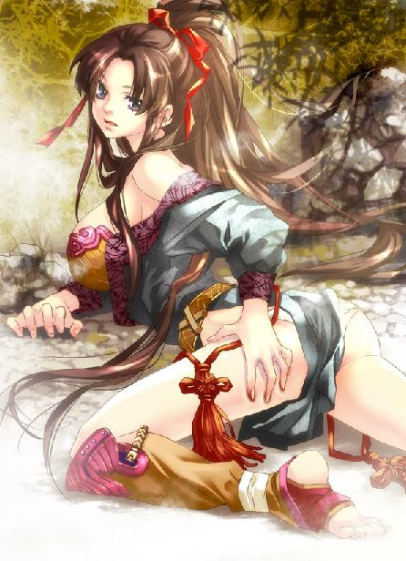
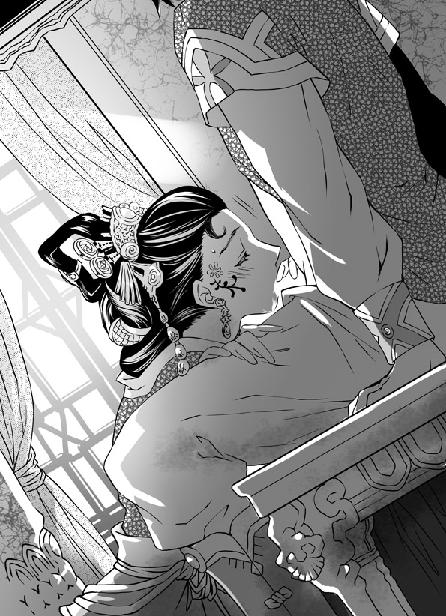
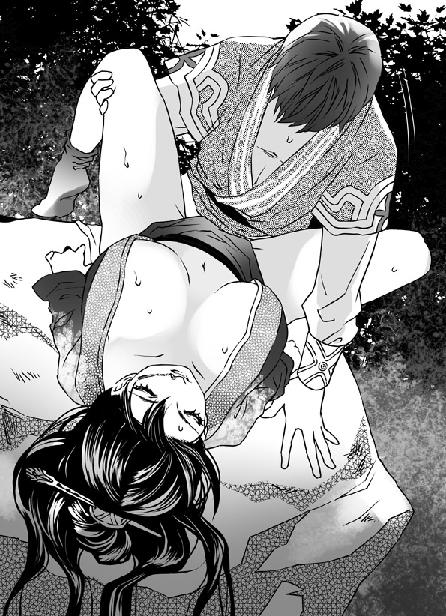

第21集·广阳重逢
云水篇（1/4）
出版日期：2011-04-15
【本集内容简介】
一夜沉浮，大难不死。漂流至广阳城郊的程宗扬竟意外逢遇月霜。误打误撞之下，“飞鸟上忍”这黑魔海供奉的身份仍紧跟着他，甚至让他知晓六扇门内有黑魔海渗透的奸细。
月霜与其所投的雪隼佣兵团被牵连进黑魔海的阴谋，程宗扬虽利用供奉身份玩了一手计中计，却深感黑魔海剑玉姬的可怕——这些动脑的事若有小紫那丫头在身边就好！但遭逢大变的他下定决心必须变得更强，身边之人和拥有的事物才不会再次受到伤害……
※ ※ ※ ※ ※

封面人物：月霜

插图：游婵

插图：泉玉姬
黑漆案几上，放着一幅丝帛制成的地图。赭红的山脉在编织过的蚕丝上蜿蜒起伏，蓝色的河流从地图左侧绕过，河边的平原上绘着一座城池。
一道淡黄的细线越过山脉，在城下汇集起来，越来越多的淡黄色结成连绵的营盘。接着山脉边缘的绿色开始消褪，伐下的树木被砍去枝叶，组建成一座座活动的木楼。
木楼离开营盘，在丝帛上移动着逼近城池。城内架起成排的投石机。包裹着燃烧物的巨石无声地越过城堞，一座又一座木楼被巨石击中，倾覆并燃烧起来。
但更多的木楼越过城下鸿沟，直抵城下。
战火开始在城堞上蔓延。
短暂的僵持之后，一条黑色的细线从城中冲出，快刀一样切入敌阵，淡黄色潮水般退却。更多的淡黄色出现在地图上，在营盘前汇集成一块长方形。一片乌云从阵前飞起，冲向长方形的黑色线条像被一只粗糙的手掌抹去一样，迅速变得稀薄。
长方形缓缓向前移动，残留的黑色线条退回城中。与此同时，代表河流的蓝色上也出现成片的淡黄颜色。另一片淡黄色则出现在城后，将城池团团围住。
无数细小的红色在城池周围迸出，越来越多。城池一角开始燃烧，一座座建筑被大火吞噬，几乎蔓延到整个城池……
“砰”的一声，一只茶杯被人碰倒，茶水淹过丝帛，冲淡了图上“江州”两个墨字。白发的老人伏在案上，鼾声大作。
程宗扬大叫一声，猛地坐起身，夕阳火红的光线射入眼帘，带来一阵眩目的刺痛感。
这是大江一条不起眼的支流，河水蜿蜒向西，在视野的尽头汇入滔滔江水。
往东是支流上游，一条杂草丛生的小路越过起伏的山丘，伸向不知名的远方。自己躺在河滩上，身上的衣物已经干了大半。
程宗扬闭上眼，胸口不停起伏。剧痛从身体每个部位传来，皮肤、肌肉、骨骼、经脉……整具身体都像被人拆散又胡乱扔在一起，变得支离破碎。
只有唇舌残留的一点余香，使他知道自己还活着。
往事一幕幕掠过脑海：破碎的船篷，娇笑的妖妇，柴房的惨叫，三头七眼的魔犬，湍急的江水，还有小紫口脂甜甜的香气……
“死丫头！”程宗扬狂叫一声。
空山寂寂，几只鸟雀从山林中飞出，投向夕阳下的远山。
一股强烈的愤恨和愧疚涌上心头。仅仅一天之前，自己还自信满满，觉得世间的一切唾手可得。每次秦桧旁敲侧击希望自己振作，自己不是装作不懂，就是顾左右而言他。原因只是自己辛苦了这么久，如今大局已定，有理由好好休息一下，放松放松。
几天前自己还沉浸在阳光与美女之间，为接踵而至的喜庆高兴，觉得自己为身边的兄弟做了件大好事。然而命运以一种最残忍的方式击碎了自己的美梦。
小魏与莺儿双双惨死，卓美人儿背叛，小紫生死未卜……
建康风云变幻，自己左拥右抱、得意非凡。直到苏妲己一击，程宗扬才惊觉自己的美梦仅仅是个一碰就碎的肥皂泡，自以为坚固的城堡只是建在流沙之上。
“客行依主人，愿得主人强！猛虎依深山，愿得松柏长！”
秦桧的祝酒辞言犹在耳，结果自己这个主人非但不能保住掩护自己的兄弟，还要靠一个小女孩来救命。
自己竟然如此虚弱，苏妲己只动动手指就足以让自己所有的一切都灰飞烟灭。那妖妇在石灰作坊虐杀小魏夫妇时，心里一定充满冷笑。
程宗扬从来没有这样恨过一个人。他咬紧牙关，只要能打败那个妖妇，无论用任何残忍的手段，自己都不会有半点愧疚。还有卓云君……
与苏妲己一战，小紫几乎失了一半的血。如果不是因为自己，连油瓶倒了都不扶的死丫头怎么会拿出一半的鲜血做赌注？还有雪雪，死丫头抱了它那么久，却为了自己毫不犹豫地一刀斩杀它的魔体。
付出这么多代价，都是因为自己可笑的好心肠。明知道那妖妇毒如蛇蝎，却在占尽上风时平白放过她。明知道留着卓云君如同玩火，可就因为自己上过她几次，便把她当成自己的女人，把她的屈意逢迎当作倾心顺从。真是可笑，她恨自己还来不及呢。有机会反咬一口，她可没有丝毫心软。
当卓云君充满怨恨的一掌拍在小紫肩上，自己才知道小紫为什么从来不对卓美人儿假以辞色。她早就看出卓云君隐忍背后的恨意和不甘。
“死丫头……”程宗扬低低说了一句，鼻间涌上一股酸意。
以前被小紫捉弄，总觉得死丫头很欠揍。直到昨晚自己抱着昏迷的小紫，在暴雨滂沱的大江中随波逐流，直至筋疲力尽，那一刻，含着她香软的唇瓣，呼吸着她甜美的气息，程宗扬才发现死丫头原来离自己这么近，近得无法分开，仿佛彼此血肉都交融在一起，不知不觉间已经成为自己身体的一部分。
程宗扬下意识地伸出手，身边却空落落的少了些什么，连心里也空了一块。
程宗扬环顾左右，背包静静摆在地上。他捡起来，看到背包下的河滩上写着两个字：等我。
字迹细细的，让自己想起小紫纤美的手指。
心头泛起一股异样的感觉。甜甜的，很软。
程宗扬嘴角露出一丝笑意。自己早该知道死丫头死不了，这世上她还没有祸害够呢，哪儿会那么容易就死？
良久，程宗扬拉开背包拉链。里面的积水已经被倒过，那柄珊瑚匕首装在鞘里，放在背包一角。
“这个死丫头，连防身匕首都不带……”
程宗扬嘟囔着拿起匕首，收到怀里，接着捡起那只裹着苏妲己血滴的琥珀。
还好，琥珀温度没有变化，看来那妖妇没有追上自己。程宗扬牢牢把琥珀贴身收好，这次说什么也不让它离身了。
包里的物品没有少，都卢难旦妖铃还在包内，那些寸许长的小卷轴只剩下两三个，虽然在水里泡了一天，上面并没有多少水渍。另外还有一只皮夹，这个是和背包一起跟自己穿越的。自从发现这里没有纸币，皮夹无用武之地，程宗扬就将皮夹扔在包里。这会儿看到，心里微微一动，捡了起来。毕竟这是仅剩的几件和自己一同来到这个世界的物品。
程宗扬打开皮夹把里面的水倒出来，忽然指尖摸到一个硬硬的物体，摸出来时却是一块玉佩。佩上的缨络还是新的，佩身呈圆形，玉质半黑半白，形成一个天然的太极图。
程宗扬恍然想起，这还是自己在大草原时，蔺采泉为了招揽自己，特意留给自己的信物。那老家伙吹嘘太乙真宗的分支遍布天下，随便他到一处，拿出信物就能跟他联系。但自己在建康待了那么久，也没见到城里有道观，就一个清远的玄真观，还是荒废的。
程宗扬把玉佩扔回皮夹，重新拉好背包，然后盘膝坐在河边，望着河水。
“死丫头，太过分了吧，说好陪我的，又一个人溜掉……喂，我知道你在里面。有鳃了不起啊？随便找条河就睡。”程宗扬气哼哼道：“我告诉你啊，我这儿才是你家。进了我程家的门儿，想走可没那么容易。你生是我程家的人，死了也是我程家的死人……
“对了，我刚才做了个古怪的梦，梦到小狐狸的新窝了。你不是看中小狐狸了吗？等你恢复好了，我们就去找他。让小狐狸用最好的车马送我们回建康……喂，你别睡得太久了，我只等你三天啊。瞧你选的这地方，连个人烟都没有，把我往这儿一扔，想饿死我啊……”
河水静悄悄流淌着，孤独的鸟影从水面飞过，却没有留下痕迹。
程宗扬沉默了一会儿，小声道：“我已经想过了，这次让你遇险，都是我的错……听到了吧？我已经认错了……我早知道自己应该变得很强才能保护你，却一直不用功。我保证，”程宗扬举起右手，“往后你抢我的女人，我再也不生气了。还有！我要变成王哲那样的高手！那妖妇再出来，我就拧断她的狐狸尾巴给你出气！还有姓卓的！那贱人差点害死你，等我练成绝世武功，就闯进龙池把她揪出来！妈的！我的人她都敢欺负！”
程宗扬怒火中烧，心神波动下，受创的经脉顿时一阵剧痛。他放缓口气，柔声道：“好啦，我知道你很累，好好睡一觉吧。我也要抓紧时间用功了。等我变成绝世高手，你就可以在六朝横着走啦。”
伴着淙淙的河水，程宗扬慢慢调理气息。积蓄在丹田内的真阳随着气轮的运转，一点一点释放出来，越过怡神守形和养形炼精，直接从积精化气开始，将积蓄在丹田内的真阳转化为真气。
一股温热的气息从小腹升起，沿着受创的经络缓慢运行，逐一打通封闭的穴道。程宗扬已经习惯了太一经和九阳神功这两种不同的功法一起练习。每次先按太一经的心法，真气行走六大阴经，再转为九阳神功，改走六处阳经。气息在体内像呼吸一样此消彼涨，先阴后阳，往来相济。
红日西沉，暮色四合。不知过了多久，一只小鹿从林中蹿出来，看到河滩上的人影，立刻折身沿河滩奔开。
程宗扬吐了口气，睁开眼睛。调息了两三个时辰，受创的经络已恢复大半，看来再有一天就差不多了。接着肚子不客气地叫了一声，告诉自己已经一整天没吃饭了。
程宗扬坐起身，四野无人，夜色渐深，远处的山林一片幽暗，看不到半点灯火。天知道这里离建康有多远，这会儿祁远应该已经发现石灰坊的情形……他猛地握住拳头，心头像刀割般一痛。
良久，程宗扬安慰自己。有秦桧和吴三桂在，那妖妇未必敢出手对付祁远和吴战威。他扭头看了看，这里荒郊野外，如果要找吃的，恐怕要走出十几里。万一小紫回来没有见到自己，肯定会很生气。
算了，程宗扬嘀咕着。再撑两天也饿不死，还是在这儿等吧。如果小紫回来，自己就摆出奄奄一息的样子，她不让自己亲一口就装死给她看。
程宗扬站起身，伸了个懒腰，又愁眉苦脸地捂住肚子。这才一天，往后两天真不容易捱过去。
忽然一阵铃声沿着小径传来，程宗扬精神一振，手脚并用地爬上河岸。只要有人就好，讨口饭吃应该没问题吧。真不行硬抢也行啊，以自己现在的水准，怎么也算个江湖好手吧？
待看清铃声来处，程宗扬打劫的心思立刻化为乌有，客气地往旁边让了让，一边示意对方先走。
一匹枣红色的健马出现在薄雾中，马蹄踏破夜色。马背上的汉子背着一张铁脊雕弓，岩石般的下巴透出根根胡须，头上系着一条藏青色的额带，臂上戴着一只鹰隼的标记，握着缰绳的手掌又厚又硬，拇指套着一只青铜扳指，目光桀骜不驯。看到有人拦在路上，他扬起手，后面的队伍立刻停了下来。
那汉子挺起胸，沉声道：“前面是哪位朋友，报上名来！”
程宗扬堆笑道：“这位大哥，你看我像劫道的吗？就算是劫道的，你们好几十个人呢，我敢自己出来吗？”
那汉子笑了起来，“我还以为足下艺业惊人，敢一个人拦我们雪隼佣兵团的队伍呢。这位兄弟是哪里人？怎会一个人在这里？”
佣兵团？哪儿来的佣兵团？程宗扬心里嘀咕着，嘴上道：“我是建康来的，船只昨晚遇雨沉了，一船人就剩我一个，好不容易游到这里。”
那汉子打量了他几眼，“你水性不错啊。”说着他跳下马，“前面有十来里的山路，今晚不走了，在这儿宿营！老张！你往前面瞧瞧，接应的队副怎么还不来？”
老张答应一声，打马往前去了。队伍中一个穿着脏兮兮青袍的瘦子从马上站起来，大声道：“各位兄弟！到了我们雪隼佣兵团，就要听队长的命令！上午给你们发的装备呢？每人一套铺盖！五个人一顶帐篷！都拿出来！咱们当佣兵的，活要干得利落，让人挑不出刺来——哎哟！”
话没说完，瘦子身下的坐骑低头吃草，向前一动，那瘦子顿时从马上跌了下来，引起一片哄笑。
为首的汉子笑骂道：“冯大法！你就消停一会儿吧！”
姓冯的瘦子讪讪爬起来，朝马屁股上拍了一把，臊眉搭眼地说道：“这不听话的畜牲……”
那些汉子都是野外宿惯的，一起动手，一会儿工夫就搭好帐篷。这些帐篷比起易彪用的北府兵军帐更小巧，白色的帐身上绘着雪隼的图案，看来是佣兵团的标记。
“我姓敖，敖润，不过跟海龙王没什么关系。”为首的汉子拿出一只铜制的酒壶，先抿了一口然后递过来，“喝一口，祛祛寒气！”
程宗扬喝了一口，一股火线顿时从喉咙直烧下去，烈得喉咙都仿佛烧掉，喘着气道：“好酒！”
敖润大笑道：“喝我的烧刀子没咳出来的，你是头一个！再来一口！”
程宗扬见他豪爽，也不客气，举起来又灌了一大口。这酒比自己喝过的酒都烈，喝到肚里浑身都热热得发烫。
敖润打量着他，“小兄弟这口背包有点意思，什么料子的？”
“在建康买的，我也弄不清。”程宗扬放下酒壶，道：“敖大哥，这是什么地方？”
敖润也不在意，往前面一指，“这里是广阳地界，前面就是广阳城。”
广阳？准备开渠的那个广阳？程宗扬记得云苍峰那张地图上，广阳离建康有好几百里远。
“不会弄错了吧？前面难道不是京口？”
“兄弟你不会是在京口沉的船吧？”敖润道：“你瞧这地上，哪儿下过雨？昨晚京口下过雨没错。从京口到这儿足有二百多里，你这下冲得够远，没撞上礁石算你运气。”
程宗扬听得发怔。从建康到京口还有一百多里，一个晚上自己在江中被冲出三四百里，难怪能甩脱那妖妇。
敖润道：“沉船这种倒霉事我遇的多了。看小兄弟的穿着也是殷实人家，沉了船不打紧，能保住命就好。”
自己实打实地在水里泡了一夜，这种走江湖的汉子见多识广，一眼就看出他身上落水的痕迹，虽然觉得他运气好得出奇，倒没有起什么疑心。
三四百里，自己要走回去可得几天，看来一时半会儿没办法跟祁远他们联系了。程宗扬道：“敖兄的佣兵团是雇佣兵吗？”
“没错！干的就是刀头舔血的生意。”
敖润摘下铁脊雕弓。为了保持弓弦的弹性，弓弦平常都是松开的，这会儿他把弓弦拧紧，用拇指上的青铜扳指扣着拉了拉，放在手边，防备夜里突然出事。
程宗扬满脑子都是疑问。六朝也有佣兵？晋国兵力算少的，常备兵也有几十万，还要佣兵做什么？难道有人要对付小狐狸，请来的佣兵？程宗扬想起那个古怪的梦，心里顿时一紧，试探道：“晋国要打仗吗？”
敖润大笑道：“晋国哪儿用得上咱们？我是听说建康解散了一批老兵，专门来挑人的。可惜晚了一步，已经被人挑走一批，好不容易才找来这些。”
原来后面那些汉子是晋军，不知道是禁军还是水师的军士。程宗扬往外看了一眼，笑道：“你们消息挺灵通啊，才半个月前的事，就赶到建康来招人了。”
敖润是个豪爽汉子，说道：“我们雪隼佣兵团在晴州也是数得上的大团，本来人手足够用了。日他娘的！前些天出了件怪事，徐老三和赵老七这两个队长连个话都没留就突然跑了，还带走了十几个得力的兄弟！弄得我们措手不及。”
程宗扬道：“不会是跳槽到别的佣兵团了吧？”
敖润大摇其头，“徐老三和赵老七我信得过，不是这种人！”
说话间，旁边传来一阵喧闹。几名新加入佣兵团的军士掘了土灶，捡了干柴正准备生火做饭，姓冯的瘦子挤过来，要给大伙露一手隔空点火的神术。大伙听着好奇，都在旁边看热闹。
程宗扬道：“那位冯兄是法师？”
“可不是嘛。”敖润道：“按我们佣兵团的规矩，每一队都要配一名懂法术的，免得遇到对手有法师不好应付。”
姓冯的瘦子盘膝坐在灶前，两手在脏兮兮的袍子上擦了擦，闭目凝神，嘴唇微动，口中念念有词。他手掌对搓片刻，大喝一声往前推出，袖中风声大作，气势惊人。几个离土灶近的赶紧跳到一边，生怕被他施出的火焰带到。
疾风拂过，那堆干柴“呼”的一声……连股烟都没冒起来。
正在擦汗的冯大法顿时傻了眼，旁边几名汉子瞧瞧柴堆，再瞧瞧冯大法，又互相看了几眼，不约而同地捧腹大笑。
笑声未落，后面忽然有人叫道：“娘哎！帐篷怎么烧起来了！”
众人顿时一阵大乱，赶紧冲过去灭火，冯大法左看右看，一勾头就想开溜。
“冯大法！”敖润笑骂道：“看你干的好事！那顶帐篷还是新的，就让你给烧了！这账咱们记下，回头在你工钱里扣！”
冯大法也不敢还嘴，灰头土脸地嘟囔道：“我就说风向不对……应该背过来施法才是。”
敖润龇牙一乐，对程宗扬道：“冯源是平山宗的，一个小宗派，你可能没听说过。平时好吹个牛什么的，整天说自己早晚要成为大法师，大伙都顺着叫他冯大法。人还行，就是法术蹩脚了点。”
他抿了口酒，“嘿嘿”笑了两声，“御法师可不好找，蹩脚点的我们也认了。反正队伍里有个懂法术的，说出去也有面子。”
程宗扬看着冯源脱了长袍，手忙脚乱地救火，旁边还有人揶揄，“冯大法，你施个引水的法术过来，一下就把火给灭了！”
冯源严肃地说：“你这就外行了，我们平山宗是火法！我要施出法术，水引不过来，弄不好把这条河都烧干了！”
众人见他还死要面子，都哄堂大笑，“那也行啊，今晚的鱼汤就靠你了。”
总算火势不大，几个人扑打一会儿灭了火，笑闹着开始埋锅做饭。
程宗扬与敖润攀谈几句，得知六朝佣兵团数量不少，护送货物、保镖、甚至上阵作战，只要有人出钱，什么都好商量。佣兵团大都集中在晴州，原因是晴州名义上依附宋国，实际由晴州几家大商会共管。无论城市防务还是出海作战，都从佣兵团雇佣人手。
佣兵团除了招募时的安家费用，平时不发工钱，只管饭管住，哪家商会要请人，拿出的钱一半归佣兵团，另一半归佣兵。如果出事，佣兵团要对所属的佣兵负责，因此上规模的佣兵团都极重信誉。
雪隼佣兵团在晴州算是排行前十的大团，里里外外有一两千人。由于出海的生意多，团里大半都是惯于海上厮杀的水手。敖润这个队长管着百十号人，算是少有的陆战队伍。
前些天晴州几家大商会通知各团，要招募一批打过仗的步卒。团里正忙碌着抽调人手，谁知突然少了两名队长和十几名好手。敖润当时正和副队长带领几名兄弟护送一家商号的货物到广阳，得到消息，只好临时赶到建康招募。总算来得够快，挑选到二十多个打过仗的。因为团里催得紧，招够人便乘船从建康出发。
他们一行二三十人在江边下船已是傍晚，本来说好副队长过来接应，却迟迟没有见到人，索性在路上住宿一夜。
敖润道：“广阳离这儿只有十多里，一个多时辰就能赶到，这会儿天晚不好赶路。小兄弟，不如明天跟我们一起走，到了广阳你再想办法回去。”
程宗扬还要等小紫，推托道：“我就不劳烦各位了，明天去江边碰碰运气，看能不能遇到回建康的船只，好搭船回去。”
敖润也不勉强。不多时饭菜煮熟，程宗扬早已饥肠辘辘，佣兵团的汉子拿来饭菜，他也不客气，捧起来就吃。只有冯源告诉大伙，他这位未来的大法师正在辟谷，喝口清水就足够了。
刚吃了一半，两匹快马疾驰过来，一个清亮的声音道：“敖队长！”
程宗扬背脊一僵，难以置信地瞪大眼睛，一口饭含在口中，说什么也咽不下去，听着那个副队长说：“原本说要来接应大家，但因为劫匪……”
敖润腾地站起身，“咱们的货被劫了？”
“是另一家商号。”副队长简短地解释道：“劫匪下手狠辣，广阳城没有驻军，官府人手不够，听说咱们雪隼团正好在城里，前来请咱们帮忙。”
敖润放下心来，摸着下巴道：“出价多少？”
那位副队长微含怒意道：“敖队长！劫匪作乱，我们怎么可以坐视不管，还要官府出钱？别忘了，雪隼佣兵团的宗旨是公平、正义、责任和勇气！”
敖润头痛地摸着后脑勺，“你说的没错，可我得为兄弟们考虑吧？咱们二三十号人，一天的饭钱就得十几个银铢……”
副队长截口道：“把货送到广阳，我们不是得了钱？难道还不够用吗？”
“护送费用是八百银铢！团里拿一半，剩的四百银铢是咱们五个的。辛苦一个月，每人八十银铢已经够薄的了。”
“我那一份算给大家的好了。”
“你那一份够个屁啊！”敖润道：“我还招募了二十多号兄弟！每人三十个银铢，护送的钱用完我还倒贴一百多！从广阳回晴州，坐船得多半个月，剩的钱勉强够用。日他娘的，我一个大老爷们天天数着钱过日子，我容易吗？路上多耽误一天就多一天开销，我总不能让兄弟们要饭回晴州吧？再说了，官府请咱们帮忙又不给个说法，如果兄弟们伤了残了怎么办？”
敖润这番话说得理直气壮，副队长沉默了一会儿，然后道：“六扇门也没有多少钱。”
“六扇门？”敖润稀奇地问道：“六扇门的人在广阳？”
老张插口道：“没错。我在路上碰见了，确实是长安六扇门。”
敖润拍着脑袋沉吟道：“既然是六扇门的人，这个忙咱们得帮啊……”
老张不乐意地说道：“队长，咱们还饿肚子呢，干嘛给他们这个面子？”
敖润眼一瞪，“行走江湖少不得跟六扇门打交道，咱们雪隼佣兵团出手帮六扇门办案，卖的是交情！再则六扇门还得请咱们帮忙，说出去也光彩啊。”
副队长赌气地小声道：“市侩！”
敖润没理会，叫道：“冯大法！你兜里的钱呢？”
冯源警觉地捂住口袋，“没有！”
“少啰嗦！你一天数八遍，我能不知道？都给我拿出来！”
敖润逼着冯源要钱，这边老张盛了饭叫道：“副队长，赶紧吃吧！”
程宗扬背对两人，心里猛打算盘。早知道会撞上她，自己就是在河里泡一晚上也不混这口饭吃。可她不是去了长安吗？怎么会跑来当佣兵呢？
那位副队长快步走过去，到程宗扬身边忽然停住脚步。
一只手掌搭在自己肩上，程宗扬冷汗直冒，使劲低着头，两手捧着黑陶大碗扣在脸上，一副饿死鬼的模样猛扒筷子。
那位副队长犹豫了一下，索性低头看来。
躲是躲不过去了，程宗扬只好放下碗，带着嘴边的饭粒干笑道：“好久不见了……哈哈。”
眼前露出一张秀美的面孔，丹唇皓齿，长眉如同飞翔的燕翅，短暂的惊愕之后，她眼中迸出愤怒的火花，咬牙道：“果真是你！”
程宗扬心里一叠声道：她不会动手！不会动手！不会……我靠！来真的！
眼前几乎喷火的小美人儿左手一紧，握住腰侧的剑鞘，长剑“嗒”的一声跳出半截，接着右手抢住剑柄，“锵啷”拔出长剑。
程宗扬当机立断，一把丢下饭碗，脚下一弹，拼尽全力朝后跃去，半空中转过身，不要命地往山里狂奔。
“淫贼休走！”
娇叱声中，小美人儿飞身追来。
程宗扬怎么也没想到会在这里撞上久无音讯的月霜。王哲在与罗马军团决战前，让自己送月霜去长安找李药师，但那丫头恨自己入骨，总算看在王哲的面上没有杀自己泄忿，只是抢走所有钱物，头也不回地与自己分道扬镳。
天知道月霜怎么没去长安，却加入了雪隼佣兵团，还混了个副队长。按说这种超越一般男女的亲密关系，应该有点交情，不过看她恼火的样子，可以肯定不是找自己叙旧的。
月霜的功夫自己见过，最初来到这个世界时觉得很厉害，现在回想，应该和小香瓜水准相差不大。不过程宗扬还记得月霜那晚采血不成，反被自己采了花，这丫头愤怒之余，在面对阿伽门侬的近卫骑士团时，一剑斩杀黄金骑士，显露出非凡的实力。面对陌生人都那么狠，这会儿面对自己这个罪魁祸首，肯定更有超越水准的发挥。
程宗扬使出浑身解数，飞速逃入山林，全不顾身后惊讶的目光。
敖润瞠目结舌，半晌才道：“看不出啊，这小子功夫够俊的……”
冯源提着水壶，喃喃道：“淫贼？难道副队长……”
老张连忙捂住他的嘴巴，“别瞎说啊！”他小心看了敖润一眼，“队长，咱们……”
敖润拿起弓，“走！别叫月姑娘吃亏！”
程宗扬把背包抱在胸前，身体前倾，足尖使力，每一步都跨出丈许。如果是百米竞技的赛场，自己这会儿的速度能轻松迈入七秒大关，把所有的世界纪录都踩到脚底。不过这种极限速度坚持不了多久，狂奔一里多，一口气已经耗得大半。
幸好山林已经近在咫尺，程宗扬刚一头扎进林中就听到背后弩声响起，接着一支弩箭擦着自己的脖颈射进密林。
这丫头真想要自己命啊！程宗扬不敢把背后暴露出来，往树后一靠，腰背用力，身体用力弹起钻到另一棵树后。山林簌簌而动，半黄半绿的树叶飘落下来，掩盖了衣衫破风的声音。
月霜在后面紧追不舍，一边用长剑挑开拦路的枝叶，一边单手扣上弩矢。忽然树叶的飘落声一停，周围陷入寂静。
月霜警觉地竖起耳朵，周围虫蚁鸣叫的声音尽入耳中，那个混蛋却像消失了一样毫无动静。她握紧剑柄，眼睛在声音消失处飞快地搜寻。
林中月色很暗，那个混蛋想躲起来并非难事。不过他不会知道自己在加入佣兵团之前，曾经在长安的六扇门总部待过几个月。如果不是自己一心想加入军队，现在早已披上捕快的服色。他这点伎俩，怎么可能瞒过自己的耳目！
林木后面有一片丛生的荆棘，半人多高的荆丛有数十丈宽，一直延伸到山凹内。月霜慢慢移动脚步，突然抬起手弩，弩矢飞进灌丛钉在一件衣物上。
程宗扬在树上看得心惊肉跳。若不是自己用衣物包住石头塞到荆棘丛中，这一箭就能射得自己透心凉。
趁着月霜诧异的一瞬，程宗扬飞身而下，一头钻进荆棘丛中。在她换上弩矢之前长吸一口气，真气遍布全身，硬生生在荆棘中闯出一条路来。
衣衫破碎声不住响起，袖口、裤脚不断被荆棘钩住、撕碎。这片荆棘丛枝条密布，想从它里面万叶不沾身地钻过去，除非练成铁布衫的强硬外功。自己赌的是月霜再狠也是个女人，总不敢穿着衣服进来，半裸着出去。
“淫贼！我看你能逃到哪里去！”月霜厉声喝道，紧盯着荆条摇动的地方，远远绕开荆丛。
对面传来一声清啸，一个音调好听、腔调却略显生硬的声音道：“是月姑娘吗？”
月霜喜出望外，“泉姐姐！前面有个淫贼！”
话音未落，对面林中传来一阵兵刃撞击的激响。泉玉姬的声音道：“有几个贼寇朝那边去了，多加小心！”
月霜还没有开口，敖润高声叫道：“六扇门的朋友放心！有我们公平、正义、责任和勇气的雪——隼——佣兵团在！必定能擒下贼人！”
月霜怒道：“你把佣兵团喊那么响干嘛！”
敖润低声道：“我们雪隼佣兵团怎么了？配不上你啊？你吃着我们佣兵团的饭，给我们打打名号怎么了？”
程宗扬心里叫娘。这帮贼也真够欠揍的，早不来晚不来，正赶上这会儿要命的时候把六扇门的人引来。他心一横，朝一侧山坡钻去。这山不高，就是不小心摔下去也比被人当成淫贼办了强。
好不容易捱到荆丛边缘，明月正好被一片乌云遮住，程宗扬暗叫一声：天助我也！不管不顾地扑了下去。
身下一热，没有撞到岩石，反而撞到一个热呼呼的小人。那人被他撞得龇牙咧嘴也不敢作声，捂着屁股回头一看，惊喜地说道：“飞鸟大爷？”
※ ※ ※ ※ ※
倒在绵软的锦榻上，程宗扬还有点不敢相信。
外面小太监计好感激涕零地说着：“……就被六扇门的人盯上了。我不小心扭了脚，躲在山脚，要不是遇见飞鸟大爷，这条小命早没了。飞鸟大爷在宫里就救过我，这次又多亏飞鸟大爷一路把我背回来……”
一个女子道：“怎么会遇上六扇门的人？我大哥呢？”
“游爷和六扇门的人交手，这会儿也该回来了……飞鸟大爷可是幽长老请来的，说好是教内的供奉。古供奉出了事，往后建康这边恐怕是飞鸟大爷说了算。你该知道怎么办了？”
那女子沉默了一会儿，“仙姬……”
“仙姬怎么了？我可是内堂的。”计好不乐意地说道：“虽然外放到建康，说不定明天我又回去了。”
那女子没有作声。
计好吓唬道：“这次京口的事，教主很生气。幽长老、古供奉都栽了跟头。圣教在晋国安插的人手损失这么多，查下来只怕跟你也脱不了关系！哼哼，你不信我也行，问问仙姬怎么安排飞鸟大爷？我先跟你说清楚，飞鸟大爷是教里请的贵宾，位置比你高得多！”
那女子放软口气，“我这便请示仙姬。”
过了一会儿，计好敲了敲门，一瘸一拐地进来。
程宗扬坐起身，微笑道：“我叫飞鸟熊藏，东瀛来的忍者。”
计好一愣，随即堆起笑容，“哎哟，飞鸟大爷，几天不见，你这华言说得可真地道！”
“哟西！哟西！”程宗扬拍了拍他的头，放缓语速，撇着舌头说道：“这里滴，什么滴地方？”
计好道：“这是广阳城边一个赌坊，坊主是个女的，姓游，叫游婵。三年前被剑玉姬收了，现在是一个小香主，专管联络的。哎哟，飞鸟大爷！我可得多谢谢你！这次要不是你，我可倒大霉了。你不知道，我那天在宫里……”
程宗扬知道这死小太监饶舌，却没想到这么饶舌，从他当日在湖上跳水逃生说起，一直说到刚才被六扇门的人盯上，足足说了半个时辰。原来在林中和泉玉姬交手的不是别人，正是自己在建康见过的太湖盟和翻江会的双龙头游雍。他是游婵的亲兄，因为犯案被六扇门追捕，索性干了几票大的逃到广阳，准备从这里进入宋国继续逃亡。
晋国有王茂弘、谢太傅两人操控，黑魔海的势力一直无法扩张。这次兵行险着，想挑起晋国内乱，谁知岳帅死后就一直隐忍的星月湖突然间全力出手，把黑魔海在晋国并不雄厚的实力连根拔起。现在除了广阳一地，晋国再没有黑魔海的势力。
从计好言谈中，程宗扬听出黑魔海分内外两堂。内堂都是教主亲自挑选的年轻人，资质上佳的留在教内培养，像计好这样差一点的，有些便放到外地，忠诚绝无可疑。京口一役，教内闻讯震怒，勒令外堂总管剑玉姬查清被星月湖伏击的缘由，如有叛徒格杀勿论。那些半路加入黑魔海的教外人士，如今不免人人自危。
计好絮絮叨叨地说道：“在建康咱们都被星月湖害惨了，我昨天还在说飞鸟大爷有没有从建康逃出来呢，今天就被飞鸟大爷救了。飞鸟大爷放心，你的身份我已源源本本地报上去了，幽长老和古供奉虽然不在了，但答应飞鸟大爷的条件一样也不会少。”
天知道黑魔海用什么条件请来飞鸟熊藏。程宗扬应付几句，盘算着怎么找机会溜出去，尽快找到小紫返回建康。
房门一响，一个烟视媚行的女子进来，娇声道：“奴婢见过飞鸟供奉。”
她二十五六岁年纪，梳着一个流苏髻，穿着杏红的衫子，打扮妖冶。
“这是广阳城的游香主。”计好在那女子圆臀上不客气地摸了一把，“飞鸟大爷床上功夫高明得很，还不过去伺候？”
程宗扬哪儿有半点心情，看着游婵扭臀就要坐过来，好不容易挤出一句：“磨克代斯！”
游婵莫名其妙，计好连忙道：“飞鸟大爷说不用了。”
游婵眨了眨眼，疑惑地说：“怎么这调儿？”
“东瀛人都这调。飞鸟大爷是东瀛来的上忍！”
游婵恍然道：“难怪呢。不过看起来和咱们的人没什么不一样。”
“那是他的假面孔。”计好嗤笑道：“人家上忍的面目，你哪儿那么容易看到？那边回话了吗？没事儿，你尽管说，他就会几句，大半都听不懂。”
程宗扬心里嘀咕：难怪这死太监冲自己说这么多，原来以为自己听不懂。
游婵道：“仙姬说，另一位飞鸟上忍已经到了晴州，忍术确实不凡。上忍大爷既然从建康逃生，先在广阳歇息两天，让我们用心伺候，过几日再请上忍赴晴州与仙姬会面。”
计好眉飞色舞，“我说吧！飞鸟大爷的身手我见过，比古供奉还高明！你瞧，仙姬也这么说！”
程宗扬却听得心里发怔。怎么还有一位飞鸟上忍？难道是飞鸟熊藏的兄弟？
“还有一件事。”游婵有些无奈地说。剑玉姬吩咐此事不必告诉计好，但计好再不得宠也是内堂的人，而且他在宫里做过几年，染上了太监的阴毒，自己也得罪不起。
“仙姬吩咐，如果我大哥、谭二哥、马三哥愿意加入圣教，便帮他们解决掉六扇门的人。”
计好奇怪地问：“怎么解决？”
游婵道：“仙姬行事周密，已经设好计策，只要我大哥点头，随时可以将六扇门的人一网打尽。”
“你大哥不知道你已经入了教？”
“没有教内命令，奴婢不敢泄漏身份。”
程宗扬满心都是疑问，想知道黑魔海有什么手段把六扇门的高手一网打尽，计好却不关心这事，朝游婵挤了挤眼，“上次跟你说的事，怎么样了？”
游婵面孔微微发白，勉强道：“承蒙上使垂青，只是奴婢女儿还小……”
程宗扬听了一会儿才明白计好在赌坊躲着还不安分，竟然看中了游婵的女儿，要叫来玩玩。游婵满心不愿，死命推托。
计好恼怒起来，尖声道：“你只是教内一个奴婢！你女儿有什么金贵的！”
游婵眼中杀机一闪而过，忍气道：“奴婢不敢。”
“那我这会儿就去！你不是不放心吗？就在旁边看着！”
半晌，游婵咬牙一笑，抬头道：“请。”
计好对程宗扬道：“飞鸟大爷，你先歇着！”然后得意洋洋地伸出手，“扶我过去！”
游婵顺从地弯下腰，扶着一瘸一拐的小太监离开。程宗扬心头微动，等两人出门，闪身跟了出去。
这处院子在赌坊后面，里面还有个内院。此时已是黎明，天际微朦朦得发亮。
计好一边摸着游婵的身子，一边得意地哼着小曲。游婵突然间打了个哆嗦，计好嘻笑道：“怎么了？不舍得吗？”
游婵勉强笑道：“上使小心，这里有口井。”
说着她一手捂住计好的嘴巴，袖中滑出一柄尖刀，一刀刺进计好后心。她这刀又准又狠，计好瞪大眼睛，勉强挣扎了一下便不再动作。游婵把尸体投入井中，狠狠啐了一口，“我女儿还小，你就打她的主意！”
游婵扶着井口，身子又颤抖起来。她动手时杀伐决断，并不是个弱质女流，这时却吓成这个样子，显然是想到了黑魔海的手段，无法自制。
良久她止住颤抖，自言自语道：“死太监，你在建康便该死了，现在说你被六扇门的人杀了也没人起疑……”
游婵吃力地站起身，一回头，看到后面的程宗扬，顿时吓得魂不附体。她呆了片刻，手腕一翻，刀尖对着自己心口就要刺下，忽然院内传来一个稚嫩的声音：“娘……”
游婵尖刀停在心口，怔怔看着那位飞鸟上忍。只见他竖起手指放在唇边。
“嘘……先去照顾你女儿，我来帮你填井。”
游婵梦游般离开井口。程宗扬搬起旁边的花盆，砸碎丢在井里，心道：死太监，你的命不错啊，大家抢着来杀你。下辈子投胎别跟着黑魔海混了。
程宗扬拍了拍手上泥土，悠哉悠哉地穿过院子。
天色微亮，赌坊客人刚散，几个荷官正在收拾一片狼藉的赌桌，见到这个衣服破烂不堪的男子出来都知趣地闭上嘴。
程宗扬随手从桌上拿了只橙子剥开吃着，对漂亮的女荷官道：“筹码不少啊……给我拿点钱，一小串银铢就够了。”
那荷官为难地说道：“大爷，这钱是游掌柜的。”
“没事，我跟你们游掌柜是老相好了。一百个银铢又不多。”
荷官还要开口，后面一个声音道：“全都给他。”
荷官把盛着钱币的抽屉拉出来放在案上。一阵香风袭来，游婵挽住程宗扬的手臂，娇声道：“大爷，这么早就走，一点都不心疼人家。”说着挺起双乳，撒娇地在他身上摩擦。
程宗扬咽下发酸的橙肉，一脸苦笑地被她拉了回去。
回到房内，游婵脸上娇媚的笑容立刻消失无踪，变得一片灰白，身子也颤抖起来。
她双膝一软跪在地上，颤声道：“飞鸟大爷，奴婢自知犯了死罪，立刻死在供奉面前也没有可辩。只求供奉放过奴婢的女儿……”
“行了。”程宗扬道：“一个死太监，死就死了。至于把你吓成这样吗？”
“供奉刚入教，不知道圣教对待叛徒的手段……”游婵打了个哆嗦，咬住发白的嘴唇。
程宗扬奇怪地问道：“你也是黑魔海的人，还是个香主，为什么对一个小太监怕成这样？”
“供奉有所不知。他们是内堂的人，无论身份高低都是教内嫡传。上忍是请来的客卿，我们这些香主都是被迫入教的，在他们眼中都低人一等。”
六朝的宗门帮派，或是太乙真宗这样的同门相传，或是雪隼佣兵团那种不同门派的聚在一起。黑魔海在嫡传之外还大肆网罗江湖好手，难怪势力会扩张这么迅速。
“你是怎么加入黑魔海的？”
游婵苦涩地说道：“三年前，仙姬来到广阳，只用了半个晚上就把奴婢的赌坊赢得干干净净。她每把都是稳赢，偏又看不出她出千的手段。奴婢气忿不过，与仙姬动了手，只一招就被她制服，不得不加入圣教才保住性命。”
“那个仙姬很厉害吗？”
游婵眼中流透出一丝崇慕，“我从来没有见过那样出色的女人。无论容貌、谈吐都是一等一的出色，而且智深谋远，博闻强记。我入教之后才知道，她为了在广阳挑一个联络的香主，看了不下千份卷宗。广阳有名号的她都知道得清清楚楚，最后才选定我这处赌坊。”
这么厉害？程宗扬试探道：“她是怎么控制你的？给你下毒了吗？”
游婵一怔，“没有。仙姬还要我们做事，怎么会下毒呢？”
程宗扬道：“那你恨她吗？”
游婵连忙道：“不！奴婢不恨她！仙姬其实对我很照顾。奴婢的女儿生来就有病，还是她费尽心机找到药物治好的。这次如果不是事出突然，她也不会让那个小太监留在我这里。”
自己看不出她说的是真心话，还是把自己当成教内的供奉不敢乱说。程宗扬道：“你放心，这件事我就当没发生过，不会告诉别人。”
游婵悬了半天的心事终于放下来，泪水夺眶而出，泣声道：“多谢……”
程宗扬站起身，“好啦，我该走了。钱我也不多拿，给我一点银铢，够路上吃饭就行了。”
“飞鸟大爷，”游婵抹着泪急切地说道：“仙姬对供奉在意得很，吩咐奴婢按着供奉的礼遇小心伺候。如果供奉不方便去晴州，她会和另一位飞鸟上忍尽快过来与供奉见面。”
开玩笑，在这里等他们来揭穿自己吗？
程宗扬肃容道：“我们忍者……喔……”
游婵手掌一滑，伸进程宗扬破烂不堪的裤子，挽住他的阳具，然后朝他嫣然一笑，张开口，柔润的红唇含住阳具，软腻的舌尖来回挑弄龟头，细细吮吸。
一股热流从腹下升起，阳具在她温润的口腔中迅速膨胀。游婵抬眼朝他抛出一个媚笑，殷勤地吞吐片刻，然后吐出阳具，侧过脸伏在他腿间，唇瓣含住他的睾丸舔舐吞吐，一手扶着阳具在自己玉颊上摩擦着。
“啊……啊……”
赌坊妖艳的女掌柜躺在榻上，白光光的美腿大张，被那个年轻汉子握在手中。她娇喘道：“飞鸟大爷……你身子好壮……啊……人家……受不住了……”
“呼呼……你还真卖力啊……”
“人家才不是随便的女子……”游婵娇声道：“因为感激大爷的恩德才以身相许……”
“那个死太监没占过你便宜？”
“大爷华言说得这么好，偏有人以为大爷不懂华言。”游婵笑啐道：“他的小东西作不得数的。”
程宗扬气喘吁吁地说道：“说得好听，你就是想留住我吧？”
游婵媚眼如丝地笑道：“都说东瀛人最好色，要不是这样也留不住供奉你呢。飞鸟大爷，只要你肯留在赌坊，奴婢便让外面那些漂亮的荷官轮流来伺候你。”
“干嘛非要留我呢？你们那个仙姬不是要我去晴州吗？”
游婵咬着他的耳朵笑道：“仙姬对另一位飞鸟上忍很满意，专门给供奉安排了一名伺候的奴婢，算是供奉入教的礼物。那奴婢这两日便会过来，往后便专程受供奉差遣。供奉只要留两日，等那奴婢来了再走也不迟。听说那奴婢是教里从小养的御姬奴，相貌很不俗呢。”
“不行……”程宗扬喘着气道：“我要去河边。”
游婵又道：“仙姬已经安排了对付六扇门的人，这次六扇门来了个姓泉的捕头，若是擒下她，便交给大爷处置好不好？”
泉玉姬？程宗扬心里一阵乱跳，半晌道：“你们在广阳没有几个人吧？就靠你能对付六扇门的人？”
游婵微笑道：“六扇门有我们的人。我已经按仙姬的吩咐传讯出去，要擒下泉玉姬易如反掌。”
程宗扬心头狂转。六扇门竟然有黑魔海的人？他们是怎么安插进去的？
“哦……”游婵低叫道：“大爷射的阳精好热……”
妈的，这就射了？
程宗扬趴在游婵酥滑的肉体上喘着粗气，“把你们的计划告诉我。”
“那名在六扇门的卧底是教中机密，奴婢知道的也不多。”
程宗扬暗叫不妙。六扇门里既然有黑魔海的人，以有心算无心，六扇门那些捕快凶多吉少。六扇门的人死就死了，但这回还牵涉到月霜……
师帅嘱托自己照顾岳帅后人，自己绞尽脑汁想保住她的小命，月霜却要杀了自己而后快——这算什么事啊？
※ ※ ※ ※ ※
“这几位都是六扇门的朋友！”敖润道：“兄弟们！让六扇门的朋友看看咱们雪隼佣兵团的气势！”
敖润每次都把“雪隼佣兵团”几个字咬得极重，生怕这几位六扇门的人漏听自家的名号。那些汉子排成两列，举刀齐声高呼，声震山林。
来自六扇门的一共六人，其中四个穿着捕快服色，另外两个捕快服上多了道朱红的滚边。其中一个戴着面纱的是六扇门捕头泉玉姬，另一个是位须发皆白的老者。
老者笑眯眯道：“雪隼佣兵团的名头，老朽在长安也听说过，今日一见，果然名不虚传！能重伤太湖盟和翻江会的双龙头游雍，多亏了敖兄弟的铁弓！”
敖润谦逊地说道：“郑捕头说的哪里话！在下那一箭就算不射，姓游的在泉捕头手下也支撑不了几招！”
“敖兄弟太客气了。”郑捕头拉住冯源的手，“没想到敖兄弟队伍里还有一位法师！要不是这位兄弟施出火法，也逼这些贼寇不住。”
冯源脸都涨红了，拍着瘦巴巴的胸膛道：“郑老爷子有什么差遣！姓冯的水里水里去！火里火里去！咳咳咳咳！”
郑捕头也真好记性，众人出过手的都能说出各人的得意招术，一番寒暄下来无一错漏。六扇门的捕头声名显赫，能被郑老爷子褒扬几句，这些汉子都热血沸腾，连受伤的几个也觉得伤得值了。
郑捕头道：“今晚这一仗托各位的福，咱们大获全胜，太湖盟和翻江会的好手连伤的带死的，还有被擒下的，已经没剩几个。只不过游雍、谭英和马雄这几个为首的贼寇溜了。除恶务尽，少不得再辛苦各位几日……”
“瞧郑老爷子说的！”敖润打断他的话，胸膛拍得山响，“白头苍鹰郑老爷子在江湖中名声那是铜豆掉到铜碗里——响当当！能帮六扇门办事，是我们兄弟面上有光！老爷子你说这话就见外了不是！”
几名捕快与雪隼佣兵团的人说得热络，泉玉姬与月霜也在一旁低声说话。泉玉姬道：“卫公让你留在六扇门，你为什么走呢？”
“整天办些小案子多没意思，”月霜悄悄说：“你在六扇门快十年才升上捕头。我等不了那么久。我还是想从军，上战场打仗去。”
“卫公主持皇图天策府，你在里面一样能学兵法啊。”
“我才不耐烦学那个，我想真刀真枪的作战！你瞧，我现在是副队长了！”月霜眉飞色舞地说：“这是我上个月出海，指挥佣兵团打退海盗挣下的！哼，要不是佣兵团歧视我们女人，我早就当上队长了！哪有姓敖的那个市侩的位置！”
月霜臂上戴着一个三角形徽章，里面一只白鹰抓着两支箭，代表雪隼佣兵团的副队长。泉玉姬目光停留了一下，问道：“你那会儿追的是个淫贼？”
月霜小脸顿时黑了下来。这次为了斩杀为首的双龙头游雍，却让那个该死的混蛋跑了。而且众人听说她追的是个淫贼，虽然不敢问，但目光里都多了些别的意味，月霜一想起来就窝火。这会儿被泉玉姬问到痛处，月霜期期艾艾地开不了口，最后支吾两句，说是路上发现的。
泉玉姬却极认真，先问在什么地方，然后问受害者是谁，当时的情形怎样。
月霜编不出来，顿足道：“哎呀，你问这么细干嘛？”
泉玉姬诧异地说：“收集证据呀！证据确凿才能治他的罪。”
月霜恨得牙根发痒，“反正我看到了，就是他，没错！”
泉玉姬温和地摇头，“这是不成的，有证据才能给他定罪。”
月霜赌气道：“我不管！反正我要杀他！”
“我不会让你杀的。”泉玉姬认真说道：“你若杀了无罪之人，自己就犯了法。他是否有罪自有法律公断。即便有罪，罪不至死也不能随便乱杀。”
月霜拍了拍额头，哀叹道：“你现在知道我为什么不入六扇门了吧？泉姐，你好刻板哦！在战场上我才不管他有罪没罪，是敌人就一剑砍了！哪儿像你，还要替坏人操心，在六扇门还整天戴着面纱。”
泉玉姬耸了耸肩，“我已经习惯了。”
“你是怕别人看到你长那么漂亮，不相信你办案的能力吧！哼，六扇门也歧视女人！”
泉玉姬无奈地摇了摇头。
郑捕头远远招呼道：“泉捕头，咱们先回城歇息，等养足精神再来收拾剩下那几个蟊贼。”
泉玉姬口气冷淡地说道：“郑捕头先请回吧。我再验看一遍线索。”
郑捕头和几名捕快商量几句，一个叫袁星儿的捕快留下来，随泉玉姬一同重新检查昨晚打斗留下的蛛丝马迹。月霜满心想捉到程宗扬，把这混蛋砍掉泄忿，也留了下来。
※ ※ ※ ※ ※
敖润把荷包的钱币又数了一遍，拧眉琢磨了一会儿，小声道：“老张啊，跟你商量个事儿。”
“啥事儿？”
“你瞧，咱们还有二百一十四个银铢——”
冯源道：“有我六十八个！”
敖润眼一瞪，“再啰嗦不还你了！”
冯源退了一步，“别呀……”
敖润道：“咱们商量商量，拿出一百银铢，请郑老爷子、泉捕头，还有六扇门几位兄弟在广阳最好的酒楼喝一顿，大伙攀攀交情。”
老张迟疑道：“这点钱不够吧？”
“就咱们三个。对了，还有副队长。加六扇门的人一共是十位。要把兄弟们都算上就不够了。”
“一顿饭一人十个银铢？”冯源酸溜溜道：“敖队长，你真舍得啊。”
敖润赔笑道：“面子要紧！面子要紧！”
老张皱眉道：“我琢磨着，怎么有点不对劲呢？”
“哪儿不对劲？”
老张掰着指头道：“二百一十四个银铢，你花一百银铢请客，剩一百一十四个银铢。从广阳到晴州，坐船要二十多天，就说咱们打出佣兵团的招牌，船资到晴州再付，路上这二十来天，咱们二三十个人，每人每天就用十几个铜铢？吃饭也不够啊。”
敖润搓手道：“唉，你说这事儿……”他一脸为难地说：“恐怕大伙得饿两顿了……”
“两顿！”冯源跳起来，“咱们在广阳待着不花钱啊！”
“你不是辟谷嘛。冯大法，大伙挨饿没你什么事吧？”
“我又不辟肉啊！我跟你说，一天没有一斤肉，我冯大法师……”
房门“咣”地被推开，月霜兴冲冲进来，“找到线索了！”
几个人都跳起来，“在哪儿！”
“泉捕头在树上发现一处铁器造成的爪痕，经过比对，可以断定是太湖盟副盟主谭英留下的！郑捕头和泉捕头都看过了，又在周围盘查了一遍，判定那三个蟊贼都躲在北面的瓠山里！”
老张叫道：“那还等什么！去灭了他们再说！”
“泉捕头说，那伙蟊贼只剩下为首的三个，只要六扇门的人就够了。”
冯源嚷道：“那不成！九十九个头都磕了，还差这一个？”
“可不是嘛，我也说不行！”月霜翻开行李袋，将两只装满弩矢的皮囊扣在腰上，“我带人先去，免得他们逃了！”
敖润道：“郑老爷子和泉捕头呢？”
“都在外面！快点！”
“别急啊！”敖润道：“这会儿还没吃饭呢，我得买点吃的给两位捕头备着。郑老爷子那么大年纪，空着肚子打生打死多不合适。”
“马屁精！”月霜白了他一眼，踹门出去。
找到线索，众人立刻行动起来。除了昨晚受伤的几个留在客栈，其他人都带好兵刃，与六扇门的捕快会合，循迹入山。
※ ※ ※ ※ ※
广阳除了靠近大江一带是平原，三面环山。瓠山位于广阳之北，以形如葫芦得名，虽然不大，山势却颇为险峻。
敖润望着山脊抽了口凉气，“这山势够险，要让那三个跑了可不好追。”
月霜道：“那是三个活人，又不是老鼠。山势越险，他们留下的痕迹越多。六扇门都是追踪辨迹的高手，怎么会让他们跑掉？”
泉玉姬仿佛没有听到他们的争论。她美目在山林间缓缓扫过，然后走过去拂开一片落叶，露出泥土上半个浅浅的足痕。
泉玉姬审视着说道：“这是马雄的足印，他左脚断了一根尾趾，足印左前侧略浅。”
她小心地翻开一片叶子，露出叶上一滴血痕，“从溅射的痕迹判断，应该是从七尺左右的高度落下。马雄身材不高，必定是背着一个人，时间在两个时辰之前，方位朝西北向。”
郑九鹰赞许地点了点头。
泉玉姬拿出丝帕抹了抹手指，“我判断：游雍的伤势比我们想象中更重，两个时辰之前马雄背着他来到瓠山，因为怕在路上留下痕迹，于是进入林中。谭英负责在前开路，除了他们三人以外，身边再没有其他人手。前面那块石头背后必定有钢爪留下的擦痕。”
冯源跑过去看了看，叫道：“真有啊！”
泉玉姬道：“三寇逃到这里已经筋疲力尽，从游雍的伤情推断，至少要休息三个时辰才能动身。也就是说我们还有一个时辰的时间。”
敖润呼了口气，“六扇门的水准我算见识了，泉捕头能从一个脚印看出这么多，老敖听着就跟亲眼看见姓马的正背着人往山上爬呢。那还等什么？咱们就顺着脚印往上追吧！”
“不可鲁莽。”郑九鹰道：“这瓠山的卷宗我看过，山里有两三处断崖，道路险峻。这三寇能屡屡逃脱追捕，必有逃生之法。”
敖润道：“郑老爷子的意思呢？”
“山顶。”郑九鹰道：“瓠山有上下两条路，上路易走，下路难行。两条路越过断崖之后，在山顶会合。三寇走的是下路，若循迹追踪，容易被他们故布迷阵。不如分出一组人手直接登至山顶，在高处策应。”
泉玉姬斗笠抬起，目光透出一丝忧色。郑九鹰道：“有雪隼团的朋友相助，咱们人手充裕，不如兵分三路。一路追踪，一路抢占山顶，另一路扼守进山的路口。”
敖润叫道：“好主意！给他们来个瓮中捉鳖！”
众人商议已定，泉玉姬带着月霜、老张、冯源和两个伍的佣兵，沿下路三寇逃亡的路线追踪。另一路则是郑九鹰带着六扇门的捕快，加上敖润和五名雪隼团的佣兵，直接插向山顶。最后几名佣兵团的汉子守住路口，以免三寇逃窜出来。
敖润叫道：“弟兄们！拿到三寇，咱们和郑老爷子好好喝一场！我请客！”
大笑声中，三支队伍分开，散入山林。
※ ※ ※ ※ ※
瓠山主峰。
“大哥！”游婵扑过去，连声道：“伤得怎么样？”
游雍面如金纸，背上的箭矢已经被拔出来，衣服上都是血迹。他盘膝坐在地上，一手按住胸口，冷冷道：“死不了！”
程宗扬看看周围。旁边两个自己都见过，分别是太湖盟的副盟主谭英和翻江会的二龙头马雄。那次在章胖子的金钱豹碰面，大家没有交谈，谭英和马雄对程宗扬没什么印象，游雍眼中却寒光一闪。
程宗扬心头微凛。游婵收起泪，低声道：“大哥，你答应了吗？”
游雍冷哼道：“穷途末路，还有什么好说的。”
游婵如释重负，“大哥放心，仙姬为人很好的，必不会亏待三位哥哥。”她拉起程宗扬，“这位是飞鸟熊藏，东瀛来的上忍，也和哥哥一样是请来的客卿，现在是教内的供奉。”
游雍盯了他半晌，“我们在建康见过。”
游婵道：“上忍正是从建康来的，一直藏在宫里。”
游雍点了点头，“是了，难怪你会和张侯爷混到一处。”
程宗扬暗自庆幸。这几个都是黑魔海外围，自己这个东瀛上忍经过另一个什么飞鸟确认，就是露出什么破绽他们也搞不清楚，正方便自己浑水摸鱼。
程宗扬正容道：“仙姬下令对付六扇门的人，你们是怎么准备的？”
马雄一振手中的九环大刀，“六扇门逼人太甚！直娘贼，跟他们拼了！”
谭英双手拢在袖中，阴恻恻道：“仙姬怎么安排我们不知道。我们接到的消息只说我们若是答应，便在接到信号之后，找到一张符箓焚掉。”
“什么信号？哪里的符箓？”
“鬼知道！”谭英翻了翻眼睛，显然对黑魔海的主持者故弄玄虚颇为不满。
程宗扬心里七上八下，一会儿担心黑魔海毒计成功，泉玉姬、月霜她们都要倒霉；一会儿又担心那个仙姬只是胡吹大话，六扇门大展神威，捉拿三寇，顺便连自己这个“淫贼”也一块儿收拾了，到时候连哭都没地方哭去。
还未到午时，天色渐渐阴暗下来，天际乌云密布。几人躲在断崖一处不起眼的山凹里，背后便是瓠山顶峰。三寇昨晚突围出来，人人带伤，如果拼死逃亡，出不了瓠山就会被六扇门追上。走投无路之下，黑魔海选在这时抛出诱饵，由不得他们不吞下。
谭英忽然道：“有动静！”
马雄看了一眼急忙退回，倒抽一口凉气，“六扇门的人！”
※ ※ ※ ※ ※
山顶是一处荒废的庙宇，正殿泥塑的神像早已倾颓，看不出供的是菩萨还是道君。郑九鹰一手抚着铁尺在山头看了片刻，然后叫来两名捕快，吩咐他们守住下山路口的位置，又道：“星儿，你轻身功夫好，到树梢盯着。”
那名捕快少女答应一声便与同伴一起离开。敖润连忙叫道：“别急别急！大伙带点儿吃的！”说着赶紧捧出一只大纸包，里面塞满了烧饼、酱肉、卤鸡之类的熟食。
郑九鹰笑道：“敖兄弟太客气了。”
“人是铁饭是钢嘛，空着肚子怎么好打斗？来来来，大伙儿都拿！”
郑九鹰微微颔首，几名捕快取了食物，笑着向敖润道谢，随即散布各处。
敖润道：“郑老爷子，你也来点儿。”
“不了。”郑九鹰笑道：“我常年吃斋，这些肉食就免了。”
“哎哟，老爷子怎么不早说！”敖润买得匆忙，大纸一包，各种食物都混在一处，素饼也沾了肉汤肉汁。
郑九鹰笑呵呵道：“公门里面好修行嘛。”
郑九鹰放下铁尺，坐下来闭目养神。敖润不好打扰，讪讪地拿出素饼咬了一口。
乌云漫过，天色越发阴霾。半个时辰之后，树梢忽然传来一声清脆的鸟啼。
敖润精神一振，抓起铁弓就要往外走。郑九鹰闭目道：“莫急，是星儿见到了自己人。”
泉玉姬等人出现在断崖另一侧。月霜朝这边挥了挥手，与泉玉姬低声说了几句，领人朝断崖的藤桥走去。
敖润张望道：“他们还真敢躲啊！”
那是一处柱形的石峰，隔着十余丈悬崖，只有一条藤桥相连。如果三寇真躲在峰上，只要守在桥头，他们就插翅难飞。
月霜追了一路，眼看贼人的巢穴就在眼前，顾不得多想便带人过了桥。泉玉姬刚走到桥上，忽然停住，她仰首朝天上望去，然后喝道：“回来！”
乌云中蓦然透出一道光亮，将整条山谷映得通明。
※ ※ ※ ※ ※
鸟啼声传来，躲在山崖下的几个人都是一怔。
游婵道：“是这个信号吗？”
“不可能！”谭英道：“仙姬怎么可能知道这会儿有鸟叫？”
“没错。”游雍冷冷道：“是六扇门的讯号！”
几个人都愣了一会儿，马雄道：“符呢？”
众人四处张望，不知道仙姬说的符箓在哪里。
游婵忽然道：“是这个吗？”说着她取出一截蜡封过的竹筒。
马雄叫道：“你带着怎么不早说？”
“这是仙姬三年前留下的，交待危急的时候打开……”
“不可能！”谭英揪着头发叫道：“她三年前怎么可能知道会有今天？”
“少废话！”游雍抢过竹筒，两指一紧“啪”地捏碎，里面是一张金黄的符箓，上面的朱砂符文宛如刚写上一样鲜亮。
游雍一手抓住符箓，一手抢过马雄的九环大刀，手腕一翻，用刀背在岩壁上划过，一串火星迸射出来。金黄的符箓与火星一触，立即化成一团火光。
游雍这几下兔起鹘落，不免牵动胸口伤势，“哇”地吐出一口鲜血喷在符箓上。
燃烧的符箓非但没有熄灭，反而更加耀目。朱红色的符文在火光中扭曲着，一一亮起。当最后一个符记被火光焚尽，天际风雷大作。
无论是断崖的泉玉姬还是主峰的郑九鹰，都被突如其来的天象异变所震慑，昂头望向天际。一道金芒直刺天空，漫天的乌云迅速合拢，接着五道雷光从不同方位同时亮起，在空中汇成一道，重重击在摇晃的藤桥上。
月霜等人骇然回首，只见藤桥中间的几名同伴来不及闪避就被雷光吞没，与脚下的粗藤一起化为乌有。接着藤桥从中断开，几名佣兵随着断裂的长藤堕入深谷。老张和冯源齐声大叫，眼看着同伴消失在悬崖下，只剩下寥寥几名幸存者被困在悬崖另一端。
谷中传来一声清啸，滚滚雷光间泉玉姬飞身而起，长剑撕开雷电交织的密网，从悬崖中掠出。
马雄呆了片刻，叫道：“仙姬是活神仙啊！”
游雍眼中凶光大露，沉声道：“走，干掉六扇门那些鹰犬！”
程宗扬面上冷静自若，心里却掀起滔天巨浪。他不相信那个仙姬真能在三年前就算到今天所发生的事，但她显然有着超强的执行能力，在当事人都不清楚的情况下，冷静地配置各种资源。每一件可以利用的物品，甚至每一个人的性格、能力、遇事反应都在她掌握之中。
她留给游婵符箓时只是布下一着闲棋，这时使出却收到奇兵之效。想到她本人远在千里之外的晴州却遥遥掌控一切，这种操控能力简直可怕。如果不是阴差阳错有那个小太监当引子，又出来一个飞鸟上忍给自己做印证，再加上游婵要遮掩她行凶的事，只怕早被她看穿自己是个冒牌货。
※ ※ ※ ※ ※
敖润下巴几乎掉在地上，半晌才惨叫道：“我的雪隼团啊！我操你妈的老天爷啊！”
郑九鹰抬头望着奔腾的雷光，厉声道：“哪位使五雷诀的朋友在此！”声音远远传开，几乎压倒震彻天地的雷声。
泉玉姬身影掠出，如风而至。郑九鹰踏前一步，皓白的须发怒张起来。
“不好！”一名捕快捂住小腹，面色灰白，“有毒……”
接着树梢嘤咛一声，袁星儿从树上跌落下来，敖润扑过去接住她，一边大叫道：“是谁！是谁下的毒！”
几道怪异的目光落在身上，敖润忽然张大嘴巴，半晌才叫道：“不是我！真的不是我！”
忽然臂上一麻，郑九鹰从他怀中抢过袁星儿，沉声道：“谁中了毒？”
“我……”
“还有我……”两名守在下山路口的捕快互相扶携着出来，喘气道：“这毒古怪得紧，使不上力气……”
袁星儿道：“我们四个吃了你的食物都中了毒，只有郑捕头没事。”
敖润怔了一会儿，叫道：“我跟你们吃的一样的东西！你瞧！”他抓住一只肥鸡拼命嘶咬，大口大口吞下去，“没！没毒啊……”敖润竭力咽下去，喘道：“我们兄弟也……也吃了啊！”
袁星儿道：“你下毒会连自己人也毒吗？多半是你做过标记，只把有毒的给了我们。”
敖润呆了一会儿，抬手“啪”地给了自己一个耳光。几名佣兵面面相觑，不知道该怎么解释。
泉玉姬雪白的裤脚沾了几滴泥水，她左手提剑，右臂不自然地垂下，看来刚才五雷诀的一击让她也受了伤。
泉玉姬用冰冷而生硬的口气道：“贼人来了。”
敖润一个虎跳蹿起来，瞪着眼睛道：“老子跟他们拼了！郑老爷子，我真他妈是冤枉啊！”
泉玉姬左肘一斜击向敖润腰侧。敖润抬臂挡住，双手一分将她逼开，叫道：“泉捕头！你受了伤，不用你动手！老敖死给你看！”
泉玉姬冷冷道：“不可。”
敖润红着眼叫道：“我不跟你打！让我去杀了那三个狗贼！呃——”
敖润背后忽然一麻，郑九鹰双手扣住他的腰背，劲力到处，顷刻就封了他几处大穴。
“敖兄弟，只要你是清白的，老夫必会给你一个说法。”
剩下几名佣兵里面，一名汉子叫道：“郑老爷子，你信不过敖队长，还信不过我们吗？老爷子放心，就是死，我们也死个清白！”
几条人影缓步过来，中间的游雍一手按在胸口，面孔蜡黄，眼中饿狼般露出嗜血的目光；谭英和马雄面带狞笑，一左一右立在两边；后边程宗扬半遮半掩地勾着头，只怕被人认出来。
几名佣兵发了声喊，并肩冲了过去。这几名汉子都是晋军解散的军士，虽然手底不弱，但论起江湖搏杀的经验，比这些贼寇差得远。谭英飞身跃起，双臂一张，手背后弹出五股精钢打造的利钩，仿佛伸长的利爪绞住一名佣兵的快刀，接着右爪挥出，在他胸前留下五道血痕。
“持矛！持矛！”佣兵汉子高叫着举起长矛，将谭英的利爪挡开。
马雄挺身上前，与谭英一道逼住剩下的佣兵厮杀。游雍一手捂着胸口，笔直朝六扇门两名捕头走过去。
“泉捕头，拜你这一掌所赐，游某断了四根肋骨，心脉受创。”游雍沙哑着声音道：“此恩此德，没齿难忘。”
泉玉姬冷冷看着他，忽然回过头，用她带着异国口音的生硬语调问道：“郑捕头，你费尽心思把我和同僚引到此处，究竟存了什么心思？”
郑九鹰错愕的表情一闪而过，泉玉姬又道：“四名捕快都中了毒，只有郑捕头幸免，郑捕头能够解释吗？”
几名捕快都望向郑九鹰，露出紧张的神情。
郑九鹰叹道：“你在六扇门已经十年，难道还怀疑我吗？”
“我只讲证据。”泉玉姬道：“两支队伍同时出事，一支遇袭，一支中毒，只有郑捕头安然无恙。我现在怀疑你已经加入黑魔海，成为他们的鹰犬。”
“黑魔海！”几名捕快都发出惊呼，连敖润也拼命抬起眼睛去看郑九鹰的脸色。
郑九鹰皓眉一挑，“证据呢？”
“我没有。”泉玉姬握住剑柄，“但擒下你便有了！”
泉玉姬长剑挑起，郑九鹰暴喝一声，袖中飞出一支黝黑的铁尺，重重击在剑锋上。
游婵和程宗扬互视一眼，没想到这要命的时候，六扇门两名高手竟然内斗起来。游婵握住腕下尖刀，叫道：“姓泉的！你敢伤我哥哥！拿命来！”
泉玉姬左手使剑已被郑九鹰逼在下风，加上游婵只怕败得更快。程宗扬连忙拉住她，“别急。”
“为什么？”游婵挑起眉头，“擒下姓泉的给你当宵夜不好吗？”
程宗扬低声道：“你知道谁是卧底？”
“这还用问吗？姓泉的伤了我哥哥，又在五雷诀下受了伤。哼，若不是她没留在这边，只怕这会儿也中了毒。”
程宗扬心里没底，只不过随口搪塞，想让泉玉姬见机逃脱。但泉玉姬仿佛没有听到，剑法愈发凌厉，招招不离郑九鹰要害。
郑九鹰浓眉越皱越紧，开口道：“泉捕头，你已经受了伤，莫要强撑，让外人看了笑话。”
程宗扬目光从六扇门众人身上一一看过。郑九鹰？不像啊，如果他是卧底，这会儿身份已露，就该全力出手。看他显露的功力，只怕泉玉姬没受伤也不是他的对手。
泉玉姬？怎么可能。如果她是卧底，何必指认郑九鹰呢？
那个女捕快？有可能。那声鸟啼就是她发出的……
程宗扬看了一圈，目光又回到郑九鹰身上。不过嫌疑最大的应该还是这老家伙吧，只有他有实力把六扇门的人一网打尽。
郑九鹰手中的铁尺犹如一条乌龙，将泉玉姬的长剑不断击开，左手却一直缩在袖子里，纹丝未动。
郑九鹰铁尺带出的风声越来越响，泉玉姬一边勉强支撑，一边寒声道：“郑捕头，你的拘魂锁怎么不使出来呢？”
郑九鹰眼神一厉，铁尺陡然击出，已经用上十成力道。泉玉姬娇躯一震，踉跄着退开，半跪在地，斗笠微斜，面上薄纱渗出几点鲜血。
郑九鹰收回铁尺叹道：“老夫的拘魂锁一出，必得饮足鲜血。这么多年来，老夫每日吃斋念佛，只求少造些杀孽。”
他伸出手，温言道：“泉捕头，收手吧。”
泉玉姬犹豫了一下，放开长剑，伸手搭住他的手掌。郑九鹰刚要拉她起身，泉玉姬受伤扭曲的右臂奇迹般一弹，五指深深没入郑九鹰腹中。
郑九鹰大吼一声，袖中一条锁链怒龙般飞出。泉玉姬抬掌拍出，闪电般退出丈许。
郑九鹰盯着泉玉姬，浓密的胡须一根根张开。他右手握着铁尺，左袖铁链滑出半截，小腹鲜血狂涌，伤口血肉模糊。
泉玉姬张开滴血的玉手，掉在地上的长剑飞回掌中。这一手使得神完气足，哪里有半点受伤的模样。
郑九鹰长吸一口气，小腹的伤口奇迹般收拢，止住鲜血，他沉声道：“泉姑娘，你十岁入六扇门，先后跟随三位捕头历练，虽然你出身新罗，我六扇门从未把你当成外人。你扪心自问，这十年来可有半点亏负于你？”
泉玉姬冷冷道：“郑捕头，你身为六扇门高层，却暗中与黑魔海勾结，毒害同僚，在场的诸位都可以为我作证。”
郑九鹰深吸缓吐，慢慢道：“当日在建康，你手下的捕快遇袭身亡，我便起过疑心。想必是他察觉了你的底细才被你灭口。”
泉玉姬用没有声调的语气道：“王捕快是被盗匪所杀，人证、物证俱在。郑捕头想栽赃于我并不容易。”
郑九鹰双眼一睁，目光如电，仿佛要看穿泉玉姬的内心。泉玉姬毫不畏惧地与他对视，手中长剑犹如秋水。
“泉玉姬！你面纱之下究竟藏着什么！”
爆喝声中，郑九鹰左手的拘魂锁全力攻出。被撕裂的空气发出一串爆响，那条铁链腾起一道黑雾，宛如一只张开的大手，朝泉玉姬细长的玉颈抓去。
泉玉姬长剑微挑，剑锋在空中挑出朵朵梅花，每一朵都五瓣俱全，中间吐出雪亮的花蕊。凝成梅花的剑气不断击上飞舞的拘魂锁，将贯满锁链的黑雾击碎。
谭英和马雄好不容易干掉四名佣兵，两人身上都挂了彩，这会儿站在游雍旁边不知道该帮哪边。
游婵钦佩地看了程宗扬一眼，“还是上忍高明，一眼看出她的身份。”
程宗扬心里的惊讶比她更甚，忍不住道：“你怎么知道卧底就是她呢？”
游婵贴着他的耳朵道：“那老头若是黑魔海的人，就不会中了她的诡计。这贱人一肚子鬼魅心肠还装得大义凛然，好卑鄙……”
程宗扬悄悄摸了摸匕首，心里微微发紧。如果泉玉姬真是黑魔海的人，只怕自己的身份混不过她的眼睛。
郑九鹰脚步踏着八卦方位缓慢移动，到了“兑”位时，拘魂锁蓦然发出一声狂啸，一个血红的骷髅头从锁影中飞出，张开血淋淋的大口。
郑九鹰长眉低垂，沉声道：“我佛慈悲！”
泉玉姬淡淡道：“郑捕头身为六扇门名捕却练此邪功，念再多的佛也全无用处！”
郑九鹰道：“术无正邪，因人而异。你的落梅剑虽是正派玄功，心术不正也是枉然！”
郑九鹰锁链一摆，那只骷髅头扑向泉玉姬挽出的梅花剑影，骷髅头滴血的利齿嘶咬着将剑气一一扯碎。
程宗扬盯着他们交手的每一个细节，一些无法理解的情形在脑海中慢慢变得清晰。如果是以前，自己根本不会留意他们的格斗。但与苏妲己一战，程宗扬终于痛下决心，要保住自己所拥有的东西，就必须让自己变得更强。
直到现在自己还是靠武二郎的五虎断门刀混饭吃。武二的刀法虽然很猛，但碰上真正的高手就不好混了。不过除了王哲给自己筑下的基础，还有殇侯短短半天的指点，自己身边并没有可以随时请教的名师。大多数时候自己都要靠血的代价，来学一点基础的格斗技巧。
郑九鹰与泉玉姬一战不是自己见过的最高水准，却是自己看得最真切的一场。以前自己不理解他们的招术为什么要弄那么多花样，比如泉玉姬的落梅剑为什么要费力地挽出梅花而不直接攻出，看起来太像作秀了。
但这会儿心里隐约生出一个念头：并不是泉玉姬先有了挽出梅花的念头，为了好看才使出来，而是她每一道必须施出的剑气自然而然聚成梅花。
程宗扬想起关于战斗机的一种说法。一架战斗机的性能，只用眼睛就能看出高下。性能更好的一架，外形看上去肯定更美。这并不是设计师人为去美化，而是在风洞中反复测试的结果。如果外形看上去有缺陷，实际效果必定不尽如人意。
一个丝毫不懂武功的人拿着一柄剑可能会使出无穷无尽的怪招，但只有懂得剑法的人才能有意识地让每一招都起到应有的效果。这些招术千锤百炼的结果，就如同在风洞里反复测试，越来越趋于美观。
泉玉姬的落梅剑法招术极快，剑锋旋转着吐出剑气，勾画出梅花的第一片花瓣。如果就此止住，不必郑九鹰铁尺攻来，剑气自然散开。因此她需要连转五次手腕，勾画出五片梅瓣将剑气凝在一处，然后一剑挑出梅蕊，才能将聚拢的剑气施出。
另一方面，他们的招术虽然千变万化，却有脉络可循。一个完整的招术首先是起手，攻其不备，令对方措手不及；接着是承手，以雷霆万钧之势攻破对手的防线；如果对手见招拆招，便出现一个精妙的变招，一方面变换角度再次攻击，另一方面补足自己的漏洞；如果还不足以攻破对方，就是最后的退守。
比如自己拿刀砍人，一刀砍下去就包含了起手和承手。对手以为自己要攻他的小腹，自己却选择了脖颈，就是起手的出奇不意。这一刀砍出，中途猛然发力，就是承手。对手弱一点，这一刀就能砍倒对手，如果对手够强，一刀劈出被他挡住，就需要刀势加以变化。一边寻找对手的弱点，一边留意自己的破绽。
只要力道足够，这个转折可以无限地施展下去。但任何人攻出一刀，力量都有耗尽的时候。这一刀力量使尽之前，就要回手，留下力气防备对手趁势而入。
世间招术虽然千变万化，但一个完整的招术总不脱这几个步骤。没有承手，就无从发力；没有变招，就是直来直往的硬攻，根本没有招术可言；没有最后的防守，对手很容易便能趁隙攻入。
与敌人交手的画面在脑中闪过，程宗扬发现自己能活到现在实在是个奇迹。
如果不是有武二传授给自己的成套刀法，完全依靠本能出手，下场早就惨不忍睹。比如与苏妲己一战，自己使出五虎断门刀中的破敌猛招龙蟠虎踞，却不管招术的完整，没有留下一点余力做基本的防守，结果一招就被苏妖妇干翻。
郑九鹰的拘魂锁声势越来越猛烈，谭英和马雄早变了脸色，游雍虽然面无表情，也不得不运功抵抗逼人的劲风。
泉玉姬招式一变，明净如水的剑锋突然间透出一股浓烈的血腥气息，剑上血色涌动，凝成一道血红的翎毛，接着箭矢般射出。拘魂锁的血骷髅刚至中途就猛然爆裂。
郑九鹰失声道：“妖翎血羽！你果然是黑——”
又一支血翎射出，郑九鹰上身一折，整个身体横了过来。就在这时，泉玉姬突然玉颈一摆，头上的斗笠猛然飞出，罩向郑九鹰的面孔。
郑九鹰像见到某种可怖之极的事物般发出一声惊呼。那张斗笠覆盖在郑九鹰脸上，接着斗笠下传来一阵古怪的异响，仿佛群蚁在疯狂地噬咬骨骼与血肉。
郑九鹰手指抽动了几下，铁尺和锁链“锵”的一声掉落在地，不过是两件普普通通已经用旧了的六扇门平常装备。
摘去斗笠的泉玉姬没有再朝郑九鹰看一眼，提着长剑走到一名捕快身前。
那名捕快额头滚出黄豆大的汗滴，低声道：“泉捕头……”
泉玉姬点了点头，“叛徒已经除掉，没事了。”
说着长剑递出在他喉头停了一下，等他惊恐地张大眼睛才慢慢刺入。她眼神中没有丝毫的不忍和惊慌，甚至也没有狡计得逞的得意和嗜血的冲动，平静得像一泉井水，让人看不出她是喜是怒。
另两名捕快挣扎着起身，捂着小腹往山下奔去。泉玉姬身形一闪，挡在两人面前，淡淡道：“你们也是和郑九鹰一伙的吗？”
两人喘着气道：“不是……”
“那好。”泉玉姬一剑一个，将两名同僚刺死，然后走回来。
滴血的剑锋落在袁星儿咽喉上。穿着捕快服色的少女面孔雪白，嘴唇颤抖着小声道：“泉姐……”
泉玉姬低头看她，犹豫了一下道：“我信得过你。不会伤你。”
袁星儿感激地说道：“多谢泉姐……啊！”
泉玉姬长剑一挑，剑锋从袁星儿襟口划下，少女皂色的捕快服整齐分开，两团雪白的乳房立刻弹了出来。
泉玉姬平静地说道：“星儿，你既然身为捕快，一会儿落入匪寇手中面对他们的报复，也不要堕了我们六扇门的名声。”说着她挑开女捕快的衣带，将她裤子划开。
程宗扬一手扶着额头，右侧太阳穴的伤疤霍霍跳动。眨眼间六扇门的四名捕快尸横就地，只剩下一个少女像刚出生的婴儿一样，光溜溜躺在破碎的衣物间。而那个戴着面纱的女捕快提着长剑，目光冷淡得像什么都没发生过一样。
看着女捕快青春白晳的肉体，谭英和马雄同时露出贪婪的目光。
袁星儿脸色像死人一样苍白，忽然她赤手抱住长剑，用尽全身力气将胸口撞向剑锋。
鲜血像梅花一样在她洁白的身体上绽开。泉玉姬脸上的面纱纹丝未动，回手拔出长剑像什么事都没有发生过一样，提剑放在敖润颈中，慢慢道：“雪隼佣兵团？”
敖润看得面无人色。他盯着泉玉姬，脖子渐渐涨红，狂叫道：“我干你娘！敢冤枉老子！”
泉玉姬冷冷看着敖润，长剑刺进他喉头软肉。敖润打了个哆嗦又瞪大眼睛，“娘的！老子这辈子什么都干过！就他妈的没死过！今天倒要死一次看看！有种你就来啊，我操你祖宗十八……”
“住口！”程宗扬一脚踢在敖润脑袋上，把他踢得翻了白眼。
泉玉姬的剑锋在敖润颈中带出一道血痕，头也不抬地冷冷道：“盘江程氏的少主人也与匪寇勾结在一起吗？”
游婵赔笑道：“泉捕头莫认错了，这位是东瀛来的飞鸟上忍，现在是圣教的供奉。”
泉玉姬露出奇异的眼神，“飞鸟供奉就是你？”
程宗扬硬着头皮道：“不错。”
“程少主不是来自南荒吗？怎么变成了东瀛？”
程宗扬喝道：“愚蠢！我说是南荒就是南荒吗？”
泉玉姬目光微微闪烁，一字一字慢慢道：“吉梅玛希代，有楼稀库……”
程宗扬大松了一口气，这句自己懂啊！听泉玉姬的口音，这个新罗裔的倭语水准也不怎么样。
程宗扬绷起脸，双手握拳，梗着脖子吼道：“呜嗖！”
泉玉姬面纱轻轻一晃。
程宗扬严厉地教训道：“大家又不是初次见面，有什么好关照的！”
泉玉姬被他的气势压住，举手掠了掠发丝，忽然一掌拍来。
程宗扬急忙抬起左掌，叫道：“八格！你敢犯上！”
双掌相对，程宗扬大感不好。自己原以为她只是试探，谁知这贱人掌力凌厉之极，竟是奔着自己性命来的。自己经脉伤势未愈，这一掌足够自己死两遍的。真气侵入经脉，程宗扬气血翻腾，喉头不由一甜，口中充满血腥味。
泉玉姬真气吐出，刹那间神情大变，急忙收回掌力，退开两步，目光惊疑不定地看着程宗扬。
游婵已经搞不清泉玉姬是敌是友，急忙拔出尖刀退到供奉身边。程宗扬强行咽回鲜血，压下伤势，一手伸进背包。这次想保命，就要看飞鸟兄剩下的两支卷轴灵不灵了。
戴着面纱的女捕头犹豫片刻，然后屈膝跪倒，双手放在地上，俯下身，额头贴住手背，用生硬的口音道：“黑魔海御姬奴泉玉姬，叩见飞鸟上忍！不知供奉身上有伤，请供奉恕罪！”
程宗扬攥着卷轴，浑身都是冷汗。这贱人真是黑魔海的人！
看到泉玉姬终于表明身份，游婵松了口气，埋怨道：“你都知道了还装腔作势，险些伤了供奉。连仙姬的话你都敢疑心吗？”说着惊叫一声：“大哥！”
旁边一直苦苦支撑的游雍喷出一口鲜血，缓缓跪坐下来，接着朝后倒去。
※ ※ ※ ※ ※
体内气血翻腾，宛如奔驰的马群没有片刻停歇。程宗扬竭力收拢真气，丹田的气轮缓缓旋转，运功打通受创的经络。泉玉姬撤招及时，自己并没有受太多的伤，只不过刚才吸收的死气也在丹田徘徊，被她一掌险些击散，这会儿要费些力气调理。
这次吸收的死气一共十道，但其中一股比其余全加起来还要充沛，可见郑九鹰修为的深厚。可惜郑老头心地太好，被那贱人暗算了。
好不容易控制住体内真气，将死气一一纳入丹田，程宗扬睁开眼睛。这一个时辰的调息不仅将死气尽数融入丹田的气轮，伤势也大有好转。
天际的乌云早已散开，日影西斜，从破碎的窗口投入淡黄的光线。这是庙宇后面的厢房，墙脚有几个野獾钻出的破洞，洞口丛生着枯黄的草叶。房内的物品早被搬走一空，只剩下一张积满灰尘的土炕，不知多少年没有人来过。
程宗扬站起身活动了一下手脚。被困在峰上的月霜等人音讯皆无，他们被困峰上，只怕到现在还不知道这里发生了什么事。
脑中一时间生出无数念头。敖润被自己一脚踢晕应该还没死，怎么把他救出来？还有，泉玉姬已经对自己起了疑心，刚才为什么突然收手？自己假冒的身份经不起半点推敲，一会儿怎么溜出去？还要把月霜从断崖救下来……程宗扬心里哀鸣一声。死丫头，你要是在这儿，我还用动这么多脑筋吗？
蓦然间，程宗扬无限怀念起那个死丫头来。她在水里这么久，也不知道有没有好一点？其实有她的小嘴亲着，自己在水里陪她两天也没什么。说好让自己在河边等她，自己却溜出来这么久。小紫若看不到自己，发起飙来……
不管了！还是开溜要紧。自己假冒飞鸟熊藏，运气够好才混到现在，但运气这事儿实在太靠不住。就算能暂时瞒过姓泉的，迟早也会被揭穿。在这儿多待一会儿就多一分危险，不如见好就收，想办法救了敖润赶紧走人，等找到小紫再想办法。
程宗扬转身一把拿起背包，再回过头，汗毛险些竖了起来。
泉玉姬立在门口，那件皂黑色的制服镶着朱红的滚边，勾勒出身体凸凹有致的曲线。她的捕快服短短的，穿着雪白的长裤，腰间系着一条鲜红的丝带，上面悬着一面标记六扇门身份的铜牌，看起来果决精干，英姿飒爽。她的斗笠已经取下，但脸上仍罩着面纱，原本冷静到无情的目光却多了一分异样的光彩……如果自己没看错，那竟然是一种讨好的眼神！
“哇塔丝诺苟锈金！”泉玉姬屈膝跪在满是灰尘的地上，俯身用额头贴住手背，“磨西哇开阿历嘛森！”
后面这句自己不熟，听口气像是给自己赔罪道歉。但前面这一句自己在动漫里听过太多了！那些漂亮的小女仆经常这样喊——我的主人！
程宗扬脑中电转，脸上堆起怒色，喝道：“八格！不要在我面前说你的蹩脚倭语！你在污辱我的语言！”
泉玉姬连忙改口，用带着异族语调的生硬口音道：“对不起！上忍息怒。”
她每个字的发音都很准确，但连在一起时语调很生硬，就像对着书一个字一个字念出来一样。程宗扬只想她赶快消失，板着脸道：“知道就好！你可以走了。”
泉玉姬身子伏得更低了，“仙姬吩咐，上忍是教内最尊贵的宾客，指派奴婢作为上忍的属奴。”
程宗扬脑中“嗡”的一声。黑魔海说要送自己一个女奴，竟然是她！
※ ※ ※ ※ ※
泉玉姬一手放在面纱下，雪白的喉咙伸直，勉力吐出一颗红色的丹丸，然后双手捧起，举到程宗扬面前，娇喘道：“请主人收下。”
程宗扬皱起眉，“这是什么？”
“这是用泉奴的一魂一魄炼成的魂丹。奴婢被指定给主人，就应该向主人献出魂丹。只要主人吞下，泉奴的一魂一魄就依附在主人身上，至死不渝。”
程宗扬心头一阵狂跳。她不会拿这东西来骗自己吧？万一这是毒药呢……少来！她要拍死自己也费不了多少力气。程宗扬心一横，伸手接过魂丹张口吞下。
什么事都没发生，那颗魂丹一进肚子立即消失无踪，好像没有存在过一样。
程宗扬等了一会儿没有感觉到动静，忍不住道：“这东西怎么用的？”
失去魂丹的泉玉姬目光有些发黯，吃力地说道：“请上忍……运气到脑后的窍阴穴……”
丹田气轮一动，一股真气行至脑后，在窍阴穴上一触。原本只是经络中一个节点的穴道豁然打开，苍灰色的空间中，隐约飘浮着一个淡淡的影子。
“这是你的魂魄？”程宗扬惊讶之余，试着将一丝真气撞在淡影上。
泉玉姬如受雷殛，浑身剧震，颤声道：“求主人饶命……”
“那个影子在动呢！”程宗扬好奇地说道：“我要再用点力，把它打碎会怎么样？”
泉玉姬面纱微微晃动，低声道：“奴婢失去魂魄，即便不死，也会变成没有知觉的行尸走肉……”
“真的吗？”
黑魔海的手段让自己大开眼界。这么说来，自己只要控制住泉玉姬的魂丹，她修为再高也没有一点反抗的余地。
程宗扬收回真气，看着伏在自己脚下的女捕头，试着命令道：“你把面纱摘掉。”
泉玉姬垂首摘下面纱，扬起脸朝主人一笑。
眼前是一张娇美的面孔。她年纪比云丹琉略长一两岁，正值双十年华，容貌像整过容一样姣好，眼角比一般人略大，鼻梁秀挺，下巴微尖，柔润的唇瓣红艳得如同涂过胭脂，整张面孔像比照着画上的美人儿画出来似的，属于标准的美人胚子。
程宗扬吞了口口水，“长得蛮可以嘛，为什么要遮起来？”
泉玉姬道：“奴婢穿过鼻环，怕有人留心看出来。”
“鼻环？在哪儿？”
泉玉姬翘起鼻子，果然在她鼻翼一侧和鼻间软肉上各有一个小孔。程宗扬试着摸了摸，见泉玉姬没有闪避，索性在她漂亮的脸颊上捏了一把。泉玉姬唇角挑起，含笑任他轻薄，不敢有一点不耐烦的样子。
程宗扬摸着她光滑的脸蛋，有些怀疑地说道：“你刚才不还想杀了我吗？怎么突然这么乖，连魂丹都交给我了？”
“泉奴第一次见有倭人华言能说得这么好，还以为主人是冒充的。”泉玉姬带着笑容柔声说道：“直到刚才交手，才知道主人不仅是圣教中人，而且还蒙教主亲传神功。”
程宗扬恍然大悟。这贱人察觉到自己用的是太一经才连忙收手。自己的太一经其实非常之渣，凝羽本身学的就不对，自己又跟着凝羽错上加错。如果不是遇到殇侯这个大行家，恐怕早就练死了。
殇侯本身出自毒宗，对黑魔海巫宗的太一经也算不上精通。但毕竟在黑魔海浸淫多年，见识非凡，通过凝羽所知的一鳞半爪推测出太一经所独有的运功经脉，经过他的调整，自己的太一经才有了几分模样。
身上有这种功夫本来很扎眼的。不过早在岳帅重创黑魔海之前就很少有人接触过太一经，连小狐狸都没看出异样。除了殇侯和泉玉姬这种与黑魔海大有渊源的人，只怕没人能识破。所以自己没想过要隐藏，毕竟要说扎眼，九阳神功可能更扎眼。
泉玉姬道：“当初在建康，主人说来自南荒，奴婢仔细查过，并未听说南荒有姓程的世家，只是盘江路途遥远，无法查取实证。主人来自东瀛，却自称来自南荒，华言又说得这么好，这样偷天换日的手段，果然是神出鬼没的东瀛上忍，难怪能瞒过建康那么多人。”
程宗扬松了口气。这贱人如此巴结，看来真信了自己是冒充的飞鸟上忍。不过自己在南荒干掉鬼巫王的事，黑魔海应该知道得一清二楚，难道剑玉姬不是自己在南荒遇到的那个黑魔海女子？
程宗扬压下心头的疑惑，问道：“黑魔海的人为什么会对太湖盟和翻江会感兴趣？”
“也许与太湖盟和翻江会控制的水路有关。”泉玉姬道：“仙姬交待的事，向来不允许我们问缘故的。只命令奴婢以六扇门的名义沿途追踪，必要时可以杀一两个人立威，逼得他们走投无路。”
泉玉姬道：“泉奴奉命一直追到建康，忽然接到仙姬的命令，说星月湖八骏的玄骐现身，命我抛开一切查证此事。但奴婢刚着手，那位少陵侯府的小侯爷便离开建康，远赴江州。”
程宗扬暗叫一声好险。泉玉姬只晚了一步，接到命令时萧遥逸已经抢先摊牌。泉玉姬追查无果，转而利用芝娘画舫被劫的案子，探查当日玄武湖一战另一个参与者云家的虚实，因此才有闯入席间询问云丹琉的举动。她公然上门，以公事公办的态度查问云丹琉当天的情形，反而没有人起疑。
萧氏父子的突然出手打乱了黑魔海的全盘计划，主持此事的剑玉姬见局势已经无法挽回，立即撤出人手。与此同时，一边利用六扇门的追捕逼迫游雍，一边向三寇抛出诱饵。结果六扇门派出的高手被一网打尽，三寇加入黑魔海，顺便还重创了雪隼佣兵团。
如果不是自己这个冒牌货，泉玉姬大可以编个理由塞搪此事，然后回长安述职，继续当她的六扇门捕头。黑魔海一无所失却一石三鸟，坐收实利。这样的手段，真称得上是翻手为云，覆手为雨。
剑玉姬……剑玉姬……程宗扬明白过来，为什么连谢艺这种高明的人物也中了她的计策，客死异乡。这女人的心术和手段实在太可怕了。
“那几个捕快中毒也是你做的手脚了？”
泉玉姬毫不隐瞒地说道：“郑九鹰在六扇门多年，平常手段瞒不过他。所以我先在他们的茶水中放入半叶莲。半叶莲无毒无味，常人喝下也没有关系。还有一种天心沙，同样无毒无味，我放在敖润带的食物中。那几名捕快喝过茶水又吃过食物，两种无毒的药物相融也并不致命，但会使人在一个时辰内丹田受制，无法运用真气。若非如此，也瞒不过郑九鹰。”
敖润这个跟头栽得一点都不冤……程宗扬捏了捏女捕头的脸颊，“哟西！哟西！真聪明！”
泉玉姬柔声道：“多谢主人夸奖。”
程宗扬干咳一声，“你什么时候入的黑魔海？”
“奴婢七岁被收入教中，后来随父母迁至长安，奉命加入六扇门。到现在已经十三年了。”
黑魔海手伸得够远的。十三年前，那么是被岳帅剿灭之后不久，他们在六朝受挫，转而进入新罗，暗中发展自己的势力。
“你在教里是什么身份？”
“奴婢是教中的御姬奴。”泉玉姬道：“御姬奴都是自幼培养，以处女身送给教内立有大功的主人使用。”
程宗扬心里一动，这贱人还是处女？
泉玉姬迟疑了一下，低声道：“奴婢有件重要事情要禀告主人。”
“什么事？”
“雪隼佣兵团有个女人名叫月霜，曾经在六扇门待过一段时间，与奴婢结识。奴婢得知，她以前追随王大将军在左武军团，王大将军兵败身死，她投奔卫公李药师。奴婢猜测，她身份可能与岳贼有关。”
岳贼？姓岳的名号还真多。程宗扬装出一无所知的样子道：“那个拿剑的女人吗？哟西！很漂亮！”
泉玉姬轻笑道：“奴婢从没见过月小贱人那么生气。小贱人说主人是采花的淫贼，不知道主人得手没有？”
程宗扬冷哼一声，心神却飞到那个大草原的夜晚。这么久没见，不知道月丫头又发育没有……
泉玉姬乖巧地说道：“岳贼是圣教死敌，虽然已遇天谴死在风波亭，但教主曾经立誓，绝不放过岳贼任何一个后人。月小贱人一行如今被困在峰上，只要擒下她便是大功一件。”
程宗扬意识到她没有提及小紫，不知是因为黑魔海对殇侯颇有忌惮，还是因为他们不知道小紫已经离开南荒，以为她仍受到殇侯庇护。
“你准备怎么擒住那个小贱人？”
泉玉姬道：“瓠山孤峰奴婢已经看过，四面都是绝壁，只有一条藤桥与外界相连。现在藤桥已断，月小贱人被困在峰上，只能冒险攀援绝壁，要花费二三个时辰才能从峰上下来。孤峰下面是条峡谷，只有一处出口，到时主人只要守住谷口，就能让她自投罗网。”
这下可麻烦了。月丫头累死累活爬下山，结果一头钻到圈套里。只一个泉玉姬，那些佣兵全加起来也未必是她的对手，何况还有谭英、马雄他们。更麻烦的是，即使自己告诉月丫头，她也不信啊。自己和泉玉姬之间，恐怕那丫头只会相信后者。
泉玉姬柔声道：“那小贱人如果真是岳贼之女，主人莫说采了她的花，就是手段再猛烈十倍，教主也不会怪罪的。”她唇角微微挑起，微笑道：“上忍从东瀛来，听说东瀛人对女人有些特别的手段……”
程宗扬狞笑两声，摸着她的下巴道：“你不怕我用在你身上吗？”
泉玉姬恭恭敬敬说道：“主人蒙仙姬青睐，又得到教主亲传，可见主人在教中地位。能服侍上忍是奴婢之福。”
怪不得这贱人前倨后恭，原来是以为跟着自己这个被教主和剑玉姬同时看中的上忍大有前途，连魂丹也献了出来。不过以那位仙姬的心计，肯定不会平白送出这份大礼。
程宗扬道：“教里的御姬奴很多吗？为什么让你来当我的奴婢呢？”
“仙姬见过另一位飞鸟上忍的忍术，对上忍分外器重。因为泉奴是新罗裔，又是六扇门的人，所以才指派奴婢伺候上忍。”
“是吗？”
泉玉姬美丽的面孔上露出一个柔媚的笑容，娇声道：“仙姬说，主人是东瀛来的上忍，与新罗是世仇，最喜欢干的就是新罗女人。上忍又是采花的行家，奴婢在长安破获了好几起采花案才当上捕头。如果奴婢这个六扇门的女捕头被上忍采了花，又给上忍当奴婢使唤，上忍一定会很高兴。”
程宗扬心头一阵乱跳。剑玉姬算得真精细。如果自己真是飞鸟熊藏那厮，能干到世仇的女人，采到这个六扇门漂亮女捕头的花，这会儿早就乐翻了。
看着泉玉姬姣美的面容，程宗扬不由大流口水。这块主动送上门来的美肉不狠狠咬一口，实在太对不起剑玉姬的一片好意。但另一边月霜和敖润还等着自己救命，自己如果只顾着占这种不要钱的便宜，也太禽兽了！
程宗扬盘算着，脑中蓦然生出一个念头……
程宗扬冷哼一声，“还有一个时辰时间。肮脏的女人！给你一刻钟，把自己收拾干净！抓到那个女人之前，本供奉要好好惩罚你这个六扇门捕快！”
泉玉姬俯下身，额头贴在地上，“哈依！”
※ ※ ※ ※ ※
院中弥漫着血腥气，远远能看到几名捕快的尸体都收拢到一处。程宗扬脸色阴沉，这个女人眼也不眨就冷冰冰刺死自己的同僚，那份铁石心肠和毒辣比起苏妲己也相差无几。
小庙已经废弃多年，两边庙舍大都倾颓，杂草丛生。对面的厢房里，游婵侧身坐在一边，望着紧闭双眼的游雍，神情黯淡。
程宗扬道：“游兄怎么样？”
游婵摇了摇头，眼圈微微发红。
“谭兄和马兄呢？”
“他们往山崖下取东西去了。”
程宗扬松了口气。游雍受伤，谭英和马雄去取赃物，只要支开游婵，自己就好办了。
程宗扬道：“游大哥是被那个贱人打伤的吧？”
游婵面露怒色，咬牙道：“那贱人好辣的手！”
程宗扬用上忍的口气狞笑一声，“仙姬送给我的女奴，就是姓泉的捕头。”
游婵一怔。
“她太嚣张了，我不喜欢。”程宗扬严肃地说：“但她现在是我的女奴，想怎么收拾都可以。你明白了？”
游婵愕然道：“飞鸟大爷……”
程宗扬继续煽风点火，“她明知道仙姬想收服你大哥还下这么重的手，实在太过分了！游掌柜难道不想教训教训她？”
游雍心脉重创，命悬一线，游婵心里早已恨极了这个女人，只是她不清楚泉玉姬在教里的身份。如果比自己高，即便游雍重伤身死，她也只能咽下这口气。此时听到上忍这样说，游婵迟疑道：“可她是飞鸟大爷的女人……”
“不过是个女奴，有什么了不起的？看你眼睛都哭红了……好了，我就让她给你出气。”
游婵小心道：“大爷想怎么做？”
“我们东瀛不喜欢傲慢的女人，你去教训她，让她不要那么嚣张。她若敢反抗就说是我的命令。”
游婵眼中露出一丝感激，“上忍对奴婢这么好……”
程宗扬心里嘀咕：好什么啊，有你缠住泉玉姬，我在外面也好做点手脚。
游婵忽然抬起头，飞快地在他脸上亲了一口，“奴婢知道上忍是东瀛人，就喜欢这种调调……”说着她飞了个媚眼，“飞鸟大爷放心好了，奴婢会仔细调教那贱人，让大爷好好受用。”
大姐，我不是这个意思啊……程宗扬心里苦笑，脸上露出好色的表情，“你知道就好。”
游婵一笑，兴致满满地去找泉玉姬的霉头。程宗扬趁机溜出去，找到穴道被封的敖润。
※ ※ ※ ※ ※
敖润刚醒过来，见到程宗扬立刻恶狠狠地大呸一口，“我干你娘的狗贼混账王八蛋！我真他娘的瞎了眼！没瞧出你的牛黄狗宝！有种你砍了敖爷！敖爷皱一皱眉头就不是你亲爹！唔唔……”
“歇歇吧你！”程宗扬捂住敖润的臭嘴，试着按了按他的穴道。
敖润被郑九鹰封了穴道，看得出郑九鹰是个厚道人，下手很有分寸，要解开并不难。
程宗扬一边缓缓送入真气，一边贴在他耳边道：“你要不想害死我，就老老实实别作声。仔细听我说……”
敖润一边听，一边眼睛越睁越大，几乎把眼珠子瞪出来，最后猛地一点头。
因为担心点火会引起月霜等人的警觉，那些捕快和佣兵的尸体被扔成一堆，准备等剩下的人一网打尽之后再一起焚尸灭迹。看着郑九鹰血肉模糊的尸身，程宗扬心里念了声：阿弥佗佛，菩萨保佑。
敖润穴道滞留的劲气慢慢松开，经络逐渐变得通畅。程宗扬低声道：“说好了。敖爷再坚持一会儿。”
程宗扬松开手，敖润仍原样躺在地上，只不过那张铁弓被摘下来放在他手中。
庙舍门板早已朽坏，程宗扬刚到门口，一个生硬的女声便说道：“主人，你回来了。”
只一会儿工夫，破陋的庙舍已经打理得一尘不染。除去面纱的新罗女换了一身崭新的捕快制服，她长发挽起，用一根簪子簪着，顺从地跪在地上，伏首贴耳，展露出胴体优美的曲线。簪尾一颗指尖大的碧玉珠子在她髻上一晃一晃，看起来平添了几分妩媚。
游婵抱着手臂站在一边，冷冷道：“叫老爷。我刚才说的，你记住了吗？”
泉玉姬扬起面孔，微笑道：“奴婢知道，老爷是东瀛来的，有什么和平常人不一样的嗜好，做奴婢的也要乖乖奉迎。”
“真乖。”游婵拉长声音道：“泉捕头，我们来玩个游戏。”
“是！请吩咐。”
“泉捕头是新罗的女捕快，正在办一起采花案，结果失手被东瀛来的上忍擒住。”游婵笑吟吟道：“泉捕头看起来正气凛然，其实是个怕死鬼，为了保命，主动让上忍采了花，而且给上忍当了奴婢，为了活下去什么都肯做。”
泉玉姬点头道：“是。”
游婵道：“用新罗语说。”
“凑啊哟。”
游婵看了程宗扬一眼。程宗扬算着时间，脸上露出好色的狞笑，“先封住她的穴道。”
泉玉姬听话地站起身，被游婵用重手封住胸腹的几处要穴，一身功力都被制住。
游婵收回手指，接着握拳打在她腹上。劲力被制的泉玉姬痛叫一声，捂着小腹跪倒地上。
游婵收起笑容，一把抓住她的头发，骂道：“臭捕快！还嚣张吗？”
“米呀内……”女捕快说完又用华语重复道：“对不起！”
游婵拔出尖刀贴在女捕快颈中，泉玉姬张大眼睛，惊叫道：“哈集马——不要啊……去开残库残尤其达！只要能保住性命，新罗的女捕快什么都肯做！”
“真是个贱人！”游婵嘲讽道：“让东瀛来的上忍采你的花也肯吗？”
“凑撕么呢达！我愿意！”
这贱人装得还真像……程宗扬抱着手臂，目光不由自主落在女捕快胸前。随着她急促的呼吸，两团高耸的美乳在崭新的捕快服内跳动着，似乎里面什么都没有穿。
游婵看到他的眼神，扯住泉玉姬的衣领往两边一分。泉玉姬玄黑色的捕快服从腋下绽开，被扯到肩后，露出白生生的肉体。果然她捕快服里光溜溜的，两团丰挺的雪乳耸翘着，乳尖撑起捕快服摇摇欲坠的红色滚边，从衣襟中微微露出一片粉嫩的乳晕。
这贱人身材够火辣，看着她胴体半裸，程宗扬不由腹下一阵火热，暗道如果真有这么个奴婢也不错。
忽然间，脑中想起旁边的另一个女捕快，程宗扬心跳停了一下。这贱人只是在玩一个讨好主人的游戏，她的同僚却宁可死在她剑下。想到她冷冰冰刺死自己同僚的狠辣手段，程宗扬那点念头立刻抛到九霄云外。对自己朝夕相处的同僚都能下此狠手，这贱人比卓婊子还可怕、可恶。真把她当奴婢还不如养条蛇。
“下贱的女人！”程宗扬伸出手，抓住她一边丰润的乳房用力捏了几把，然后扯到衣外。
女捕头双手握住衣襟，主动拉开衣物将雪白的双乳裸露出来，用力挺起胸乳，咬着舌头道：“从噶因咖！尊敬的老爷！请玩弄新罗女人漂亮的奶子。”
两团富有弹性的肉团在手中抖动，沉甸甸的充满诱人的肉感。程宗扬屏住呼吸，心底的冲动越来越强烈。
再这么下去，自己忍不住提枪上马，那就耽误大事了。这会儿离藤桥断裂已经一个多时辰，月霜一个时辰之内就会从峰上下来。到时她很可能直接来寻郑九鹰和泉玉姬这两名六扇门的捕头。自己要做的是控制好局势，赶在此前告诉她真相。
程宗扬强忍冲动，极力克制着松开双手，用东瀛人的口气道：“嗖嘎！鼻环在哪里！”
游婵笑道：“这个新罗贱人自己带着呢。还不去拿？”
“凑啊哟！”
女捕快爬起来，晃动着雪白的乳房小跑到土炕前边，从换下的衣物中翻出几件小东西，然后跑回来跪在主人面前，双手捧起。手中是一个银制的双套环，两只精巧的小铃，还有一条细细的银链。
鼻环、细链自己知道用处，那两只小铃……程宗扬怀疑地想，不会是乳铃吧？这贱人带的东西还真齐全，不过没看到她乳头穿过孔啊？
游婵拿起银环朝泉玉姬晃了晃。女捕快顺从地扬起俏脸，露出鼻侧小孔，让她给自己戴上鼻环。游婵一边穿过她的鼻孔，一边道：“臭捕快，那两只铃是做什么的？”
“是新罗女人戴在乳头的铃铛。”
女捕快托起一团雪乳，手指拨开乳头。程宗扬这才看见她红嫩的乳头上有一个细细的小孔，似乎一直没有用过。
自己还没玩过乳铃，反正不是自己的女人，用不着心痛，不玩玩太可惜了。程宗扬拿起银铃，看到铃上有一个精巧的卡扣，上面的银针可以卡进扣内固定。
“哟西！”程宗扬拽住女捕快的乳头捏了捏。她乳头还是处女的娇红色泽，捏在指间有种柔韧感。
泉玉姬高高挺起双乳，程宗扬把乳头捏得扁扁的，用力拽长，然后将细针对着乳头小孔塞了进去。银铃在手中发出细碎的响声，泉玉姬皱起眉，露出痛楚的表情。
银色细针从娇嫩的乳头一侧刺入，片刻后从另一侧露出，中间被乳头挡住。“咔”的一声轻响，细针卡在扣内。
“古吗朴思密达！”女捕快忍着疼痛大声说：“谢谢老爷。”
游婵笑道：“还有一个呢。”
程宗扬抓住泉玉姬另一团乳房，在她乳头挂上银铃。泉玉姬两只乳头一边一个，各戴了一只铃铛，她两乳高耸，乳头翘起，银铃悬在乳头下，在乳晕上轻轻晃动。
“快一点！”
“凑啊哟！”
泉玉姬扬起头，那条银链系在她鼻间银环上，被游婵牵着在地上爬行。
她高耸的雪乳在胸前摇晃，挂在乳头上的铃铛一晃一晃，“叮铃、叮铃……”不断发出悦耳的铃声。
游婵收紧银链，把她秀挺的玉鼻扯得变形，一面嘲笑道：“真淫贱！新罗的女捕快穿着鼻环，戴着乳铃被人玩。痛不痛啊？”
“捆擦那有！”泉玉姬娇声道：“没有关系！”
游婵晃了晃链子，“把裤子脱掉吧。”
“凑啊哟！凑啊哟！”女捕快跪在地上连声答应，一边解开衣带，把裤子褪到臀下，露出雪白的圆臀。
程宗扬愣了一下。这贱人竟然穿着一条薄如蝉翼的黑丝内裤。
“这么薄的绢丝……”游婵笑吟吟扯了一把，顿时失声道：“这是什么？”
“尼博！”女捕快道：“漂亮的内裤。”
如果自己没认错，这是自己作坊的产品。作坊的霓龙丝衣没有流出多少，不知道这贱人从哪里弄到一条。这会儿雪滑圆润的白屁股配着黑色丁字裤，足以令任何一个男人淫兴大发。
游婵眼睛亮了起来。类似的薄绢虽然少见但并不稀奇，难得的是这种丝的质地和弹性。出于女性的直觉，她同样看出这种妖冶的内衣会给男人带来多么强烈的诱惑。
“这么薄，是妓女穿的吧？”
“格了的撕么呢达！你说的对，新罗女捕快的屁股上穿着妓女的内裤。”说着她昂着头，抬起屁股，让老爷观赏她诱人的情趣内裤。
“臭捕快！把你淫贱的屁股露出来！”
“凑啊哟！”女捕快扭动屁股，把丝织内裤剥到膝间。
程宗扬正待观赏她诱人的春光，外面忽然传来一声弓弦震动的鸣响，接着马雄一声惨叫。
这一刻程宗扬已经等了很久，可来的时候恨不得给敖润一刀。你就再等一会儿，让我看一眼不行啊！
泉玉姬比游婵反应更快，“佣兵团！”手臂在地上一撑想跃起身，但她穴道被封、真气受制，身子一闪又跌倒在地。
机会来了！
程宗扬一把握住匕首。泉贱人用她的身份瞒过众人，把六扇门和雪隼佣兵团一网打尽。自己的计划就是以其人之道还治其人之身，利用自己假冒的身份让黑魔海的人失去警觉。
敖润用铁弓偷袭得手，听叫声，这一箭马雄纵然不死也是重伤。眼下泉玉姬受制，游雍昏迷，剩下谭英、游婵，自己与敖润联手对付他们两个并非难事。
不过自己第一个要杀的还是泉玉姬！这个女人太危险了。虽然她主动献出魂丹，摇着屁股喊自己老爷，可有了苏妲己和卓云君的前车之鉴，自己如果再心软，那也太不长记性了。
虽然杀了她很可惜，但不杀就很可怕了。
程宗扬刚握住匕首，脸上骇然变色。泉玉姬伏在地上咳出一小口鲜血，然后腰肢一挺，已经冲开被封的穴道。她抿紧红唇，脸上淫媚的表情消失无踪，变得冷峻异常，“马雄死了。”
与此同时，一丝森冷的死气从太阳穴透入，证实了她的判断。程宗扬握住匕首退后一步，色厉内荏地吼道：“八格野鹿！”
游婵惊慌地退到角落里，“是谁？”
“姓敖的。”泉玉姬冷冷道：“有人帮他解穴。”
说着她看了程宗扬一眼，突然间像意识到什么一样，脸色大变，连冷冰冰的唇角也颤抖起来。
程宗扬一股真气游至窍阴穴，锁住那个淡淡的魂影，只等她喊叫出来就全力出手，给她来一个魂飞魄散。
泉玉姬目光僵硬，颈中汗津津渗出冷汗，忽然她跪下来，伏身道：“奴婢听从老爷吩咐。”
游婵听着外面的动静，全没注意到两人神情间的异样。
程宗扬盯住泉玉姬，那股真气丝毫不敢放松，过了会儿道：“出去看看！”
马雄倒在庙后的林子里，手边扔着一只装满金银珠宝的包裹。他胸口中了一箭，箭镞从背后透出，硬生生射出半尺，可见敖润这一箭的力道之强。
谭英伏在树后，脸上肌肉微微抽搐。见到戴着面纱的泉玉姬出来，他不由自主地向后退了一步，显示出对这位女捕头本能的畏惧。
“是那个使弓的佣兵！我刚离开，马老三就中了箭。人往那边跑了！”谭英声音嘶哑，表情像惊弓之鸟一样不安。
“游掌柜，你去照顾双龙头。”程宗扬道：“谭盟主、泉捕头，我们一起去追！”
谭英眼睛飞快地眨着，然后“嗖”地弹出钢爪朝后退去，嘶声道：“游老大伤在你们手里，马老三死得不明不白！谭某加入黑魔海是为了保命，不是卖命来的！”
“胆敢叛教！”程宗扬一摆手，“杀了他。”
游婵惊恐地张大眼睛，看着泉玉姬提剑向谭英走去，却一句话也不敢说。
三寇只剩下谭英自己，他又挂过彩，这会儿看着泉玉姬逼来，连动手的勇气都没有，怪叫一声转身逃开。泉玉姬飞身向前，长剑一挑，谭英颈后迸出长长的血迹，无头的尸身又跑出几步才颓然倒地。
泉玉姬提剑回来，她杀死自己的同僚像捏死一只蚂蚁，这会儿目光却不禁隐隐发抖。
程宗扬对谭英看也不看一眼，小心与泉玉姬保持着丈许的距离，然后对游婵说道：“你在这里等着。我和泉捕头去追佣兵团剩下的人。”
游婵腿几乎软了，扶着墙不敢作声。
※ ※ ※ ※ ※
“冯大法！”老张在下面叫道：“你行不行啊！”
冯源露出一个大大的笑容，挑起发抖的拇指用力晃了晃，接着两眼翻白，就那么捆在绳索上晕了过去。
“冯大法！”月霜气得大叫：“你怎么这么没用呢！”
“老毛病了，晕高。”老张道：“别人出海外都晕船，他倒好，平常活蹦乱跳，趴船边往下看一眼就能晕过去。今天能撑到这会儿已经不错了。”
月霜气道：“把他扔下来！”
“慢点儿！慢点儿！”老张招呼着，两名佣兵汉子拉着绳索把冯源放到崖下，然后顺着绳索溜下来。
月霜举起手弩把系在石上的绳索射断，收回背囊。老张掐住冯源的人中，一边用手为他扇风，“醒醒！”
冯源打了个哆嗦，睁开眼睛喃喃道：“这是哪儿啊……”
“快了快了！前面一拐弯就是阎王殿！”
“别闹了！”月霜喝了一声，抬头看着天色。
阳光在断崖上镀出一层金黄的绣边，佣兵团所在的峡谷被群峰遮蔽，四周一片幽暗。隐约能听到远处传来的水声，似乎有山涧流过。
老张道：“副队长，咱们的人都下来了，下面怎么办？”
月霜道：“到山顶去。和泉捕头、郑捕头他们会合。”
冯源爬起来，小声道：“副队长，我怎么觉得有点不对劲儿呢？这都两个时辰了，怎么一点动静没有？”
月霜踢开地上的碎石，用剑鞘画出一个三角，“这是主峰，这是我们所在的位置。峡谷长度大约十里，出口在这个方向。”
“哦，哦……”
老张和冯源只有点头的份儿。雪隼佣兵团里，对这个十几岁的少女副队长不服气的大有人在，但老张和冯源服气得很。不说身手，就这一手绘地形的功夫，整个佣兵团没有几个能比得上她。当初她加入时佣兵团还不想收，直到见识了她不逊色于职业军人的绘图技能，才拍板定案。他们不知月霜自幼跟随王哲，绘制地形图这种事十岁之前就学会了。
看着两个唯唯否否的手下，月霜没好气地说：“从我们的位置到主峰顶有四里的距离，隔着峡谷、森林和山涧，如果能听到声音才见鬼了。”
冯源一点都不生气，“我说嘛。”
老张揶揄道：“冯大法，你是被五雷诀吓住了吧？”
“胡说！”冯源虎着脸道：“我们平山宗的罡火真诀才是玄门正宗！什么雷法雷诀，都是不入流的小术末技！”
“咦？你上次不是说叫真罡火诀吗？”
冯源脸微微一红，支吾道：“一回事，一回事！”
老张嘿嘿笑道：“我说冯大法这么高明的法师，不会连自家的法术都记不清吧。”
“别废话了！”月霜道：“天黑前必须绕过断崖！不然大伙就在峡谷里过夜吧。”
连月霜在内，雪隼佣兵团还剩下七人。众人从崖上下来都已经累得筋疲力尽，但如果不与六扇门的人会合，到入夜还暴露在峡谷中，很可能会被敌人伏击。
谷内满是乱石，众人深一脚浅一脚走着，原本走在最前面的月霜却渐渐落到后面。她咬紧牙关，一手按住小腹，脸色越来越苍白。
该死。已经数月没有发作的寒毒竟在这时发作了。月霜勉强挪动脚步，体内寒意不住涌来，血液仿佛一点一点凝结，体力迅速消失，步伐越来越吃力。
忽然峡谷中传来一声大喊：“停下！”
接着一个浑身是血的汉子从岩石上跃下来，背后的铁弓磕在岩石上，发出一声钝响。
※ ※ ※ ※ ※
泉玉姬姣好的背影在眼前飞驰，她的捕快服比平常束得略高，那只被白色纱裤包裹的圆臀一扭一扭的，曲线毕露。两团丰挺的乳房在衣内高高耸翘，上下跳动，发出细碎的银铃声，让程宗扬想起她捕快服里除了白滑的肉体，只有一条什么都遮不住的丁字裤。
程宗扬心里一动，一直守在窍阴穴的真气游丝般探过去，在魂影两腿间极轻地一拨。
泉玉姬没有察觉真气的动作，那只圆臀却相应地微微一颤。
有点意思啊。程宗扬不断送出真气，在魂影股间来回撩拨。女捕快圆润的屁股像被一只无形的大手挑弄着，不停颤动，步伐渐渐慢了下来。接着一点湿湿的水痕浸透纱裤，从股间开始不断扩大。白色的长裤被水痕浸湿，黑色的内裤在裤间若隐若现。
泉玉姬在谷口停下，俯身察看敖润留下的脚印，抬起头道：“老爷，血迹还是热的，从溅射的角度判断，他刚刚往这边去了。”
“很好。”程宗扬指向另一个方向，“追吧。”
他指的完全是一条岔路，但泉玉姬什么都没说，按着程宗扬指的方向追了过去。
天色暗了下来，沿着弯弯曲曲的峡谷走出百余步，眼前便出现一道笔直的山崖，两旁都是两人高的巨石，已经没有去路。
程宗扬轻松地说道：“看来人好像追丢了。”
泉玉姬忽然解下长剑，连鞘扔到一边，跪下来，脸色雪白地说道：“求老爷饶命！”
程宗扬收起伪装，冷笑道：“你怎么知道我要杀你？”
泉玉姬面纱抖动，曾有的冷静和镇定早已荡然无存，牙关微微作响，眼中充满恐惧，“奴婢的魂丹已经献给老爷，无论老爷做什么，奴婢都不能反抗。只求……只求老爷饶奴婢性命……”
“猜猜，我为什么要杀你？”
“……因为奴婢做错了事，引得老爷生气……”
程宗扬笑眯眯道：“猜错了！不过你那么聪明，肯定猜得到，说出来吧。”
泉玉姬脸色愈发苍白，“老爷不是飞鸟上忍……”
“宾果！”程宗扬笑道：“你什么时候发现自己上当了呢？”
“姓敖的解开穴道的时候。”泉玉姬低声道：“他的穴道我察看过，要十二个时辰才能解开。他的修为不足以冲开穴道，只可能是有人帮他解穴。他在庙外，周围并没有同党出现，唯一出去过的只有老爷。而且……他的性命也是老爷救下的。”
程宗扬鼓掌道：“不愧是六扇门出来的，逻辑能力很强大啊！那你再猜猜，我为什么要冒充飞鸟上忍呢？”
泉玉姬声音轻得几乎听不见，“老爷要瞒过仙姬……”
“如果我不是黑魔海的呢？”
泉玉姬怔了一下，“不会的！老爷身上的太一经冒充不来！”
程宗扬咬牙一笑。
泉玉姬扬起脸急切地道：“不管老爷是谁，奴婢献出魂丹就和老爷连为一体。无论老爷要做什么，奴婢都听老爷的。老爷要杀奴婢比踩死一只蚂蚁还容易，奴婢不会也绝不可能背叛！”
“是吗？”
泉玉姬拼命点头，“奴婢的性命已经交给老爷，老爷只要一动念，随时都可以把奴婢杀死。若是老爷死了，奴婢寄托的魂魄消失，也活不了。”
程宗扬一把扯下她的面纱，露出姣好的脸蛋。她鼻上还戴着银环，那条细细的银链一端挂住鼻侧的环上，另一端挂在耳下，在光洁的玉颊上微微摇晃。暮色中，平添了几分异样的妖艳。
“泉捕头，想不想死？”
“啊泥哦！”泉玉姬急切地说：“新罗的女捕快为了保命，什么都肯做！”
“背叛黑魔海的事，你也做吗？”
泉玉姬身子颤了一下，毫不犹豫地说道：“是的！”
回答这么快不会有诈吧？程宗扬冷哼一声，把那股真气朝她魂影的腿间重重击了过去，泉玉姬玉容失色，两手掩住下体，身体触电般战栗着，白着脸道：“古吗朴思密达！谢谢老爷！”
程宗扬收回真气好奇地问：“什么感觉？”
泉玉姬颤声道：“奴婢下面像被雷电击中一样，整个下身都酥麻了……”
程宗扬勾了勾手指，“过来，臭捕快！”
泉玉姬双膝并在一起，扶着旁边的岩石吃力地站起身，走到他面前。
“解开。”
“凑啊哟！”泉玉姬答应着，连忙拉开腰带。
程宗扬不等她脱掉长裤，一手伸到她裤内，贴着她光滑的小腹插到她内裤里面，张开手抓住女捕快腿间那团美肉。
女捕快腿间淌满汁液，又湿又滑。柔软的耻毛湿淋淋贴在阴阜上和阴唇两侧。两片肥厚的软肉向外鼓起，中间滑腻的肉缝儿张开一条手指宽的缝隙，里面早已汪洋一片，不断渗出蜜汁。
程宗扬毫不客气地把手伸进她阴户，在那团柔软的美肉间拨动。女捕快一点也不敢反抗，两手提着裤子张开双腿，带着讨好的笑容竭力挺起下体，任他的手掌在自己的秘处肆意玩弄。
敖老大这会儿应该已经与月霜等人会合，说明真相，然后带着大伙儿逃命了。谭英、马雄都死了，剩下一个游婵，对他们的威胁几乎可以忽略不计。最棘手的泉玉姬，误打误撞之下把魂丹交给自己，彻底失去了反抗能力。黑魔海强大的控制秘术却便宜了自己。托了黑魔海的福，让自己白捡一个女奴。
“哦泥……”泉玉姬忽然并紧双腿夹住程宗扬的手掌，带着一丝痛楚道：“缅乔勒姆……老爷，痛……”
想起这贱人还是处女，程宗扬不禁欲火大动。
敖润要在峡谷里找人还要花点时间，自己动作快点，完全可以先采了这贱人的鲜花，再到谷口等敖润。反正今天吸收了那么多死气，正需要发泄一番。
“全脱光！”
“凑啊哟。”
泉玉姬脱掉内裤，裸露出白生生的胴体，赤条条站在程宗扬面前。她双手握在身前，并着双腿，像光着身子的司仪般躬腰施了一礼。
“他森，块向阿达！尊敬的老爷，奴婢已经脱光了，请老爷观赏。”
泉玉姬皮肤白净，暮色下仍看得清清楚楚。她脱掉鞋子的身高在一米六四左右，身材前凸后翘，雪乳圆耸，被细针刺穿的乳头高高翘起，悬着两只精巧的银铃。
她腰肢很细，小腹平坦，臀部有着完美的曲线，像匹漂亮的小母马一样向后突起，又圆又翘。白美的大腿浑圆而结实，耻毛像修剪过一样整齐，雪白的腿间湿淋淋的都是淫水。
程宗扬挑了挑她乳头的银铃，银铃摇晃着发出清脆的响声，又忍不住捏了捏她的玉颊，“这么标致，不会整过容吧？”
泉玉姬茫然看着他，不知道该怎么回答。
“我是说，你有没有用什么方法改变身体，让自己看起来更漂亮一点？”
“内也！内也！”泉玉姬连连点头，“是的！奴婢每天都有修饰身体，保养身材……随时可以给老爷最好的服侍！”
程宗扬牢牢锁定窍阴穴中的魂影，一边拉开裤子，挺起火热的阳具，“泉捕头，躺下吧。”
“凑啊哟！”泉玉姬答应着躺在一块半人高的圆石上，白美的双腿张开，拉成一个大张的一字。她下体的秘境敞露出来，肥嫩的阴唇朝两边翻开，绽露出里面红嫩的蜜肉。由于双腿大张，阴唇张成圆形，里面充溢着清亮的淫水，随着蜜肉的蠕动一漾一漾，两片娇嫩的小阴唇完全被淫水浸没，像花瓣一样柔腻。
“尼博……老爷的身体好结实……”泉玉姬娇声道：“请老爷来采花……”
粗硬的龟头顶住穴口，泉玉姬双手按住湿淋淋的阴唇，淫水横溢出来在股间四处乱流。那只柔嫩的穴口被挤得凹陷进去，在龟头下一缩一缩地抽动，充满诱人的弹性。
泉玉姬昂起头，秀美的鼻尖挺起，银环上那条细细的银链在颊侧晃动，连声叫道：“啊杂！啊杂！啊杂！请老爷用力！”
看着眼前等自己开苞的美人儿剥开妙处，咬着舌头叫自己用力，程宗扬只觉得自己勃起如铁，硬得连酒瓶都能敲碎，要干穿她的小嫩屄还不是轻而易举。
龟头在湿滑的穴口一顶，挤进狭窄的蜜穴，顶住那层韧韧的嫩膜。泉玉姬吃痛地绷紧身体，唇瓣一瞬间变得苍白。
阳具穿透未经人事的嫩膜，重重捣入蜜穴。对这个心地毒辣的新罗女人，程宗扬没有半点怜香惜玉，阳具一挺，直接尽根而入。处女嫩穴被肉棒猛地干穿，阴道壁上柔嫩的蜜肉被彻底拉平，泉玉姬发出一声尖叫，充满弹性的小穴被撑得几乎裂开，紧紧箍着肉棒。
难得这个女捕快这么多水，虽是处女，穴里却没有半点干涩感，程宗扬挺起腰，阳具插在里面，享受着她处子的鲜嫩和紧窄。
泉玉姬痛叫道：“恭喜老爷，新罗女捕快的处女花被老爷采了……哦泥！处女膜被搞碎了……”
“泉捕头，你的小嫩屄太紧了，放松一点。”
“凑啊哟！老爷的肉棒好大……”
泉玉姬竭力放松下体，被他挺着阳具越插越深，片刻后忍不住道：“奴婢的阴道太小了，装不下老爷的大肉棒……”她皱眉痛声叫道：“小穴、小穴要裂开了……”
“这叫‘屄’，重新说！”
“奴婢的小屄要裂开了！”
“闭嘴！再挺起来一些！”
“凑啊哟！老爷请用力！哦妈泥……”
泉玉姬用新罗语痛叫着，直到蜜穴被肉棒完全塞满，再没有丝毫缝隙。处子的元红从湿淋淋的蜜穴中溢出，淌在石头上，鲜艳夺目。
“啊杂！啊杂！啊、啊——”
女捕快脸侧的细链来回摇晃，一边连声媚叫，一边两手扳开大腿，下体娇嫩的蜜穴像鲜花一样敞露绽开，被主人的大肉棒插在里面来回捣弄。
程宗扬用力挺动阳具，龟头在她元红新破的嫩穴里摩擦，将她处女的标志搅得粉碎。肉棒进出间，从她柔嫩的美穴中带出丝丝缕缕殷红的血迹。
隐藏在六扇门的黑魔海御姬奴赤条条躺在石头上，美穴大张，随着阳具的起落，白嫩的屁股被压得一扁一扁，两团雪乳随着下体的冲撞，像白光光的雪团般在胸前前后抛动，乳头的银铃来回甩动，发出“叮叮铃铃”的悦耳响声。
程宗扬动作越来越快，原本柔嫩紧密的肉缝儿被棒身撑开，阴唇旁纤软的耻毛被淫水打湿，整齐地贴在两边，露出耻毛根部白净的细肉。每次阳具拔出都将她穴口红嫩的蜜肉带得翻出，淫水夹着落红在股间丹红流溢。
在建康第一次见到这个六扇门的女捕头时，自己没想到世事会有这种变化，竟然让自己采了她的处女花。真应该和张少煌、桓歆他们打个赌，让他们把裤子都输得干干净净，还要挑起大拇指赞声程哥好手段！
说起来，谢无奕那两颗牙齿真够冤的……
紧凑的嫩穴在阳具的捣弄下充满弹性地伸缩着，滑腻的蜜腔布满淫汁，带来诱人的触感。泉玉姬是第一次交合，没有什么技巧可言，但处女特有的狭窄已经带来足够的刺激。
“泉捕头，第一次被人干，是不是很开心？”
“内也！凑撕么呢达！老爷的大肉棒好硬！”
女捕快处女的殷红在石上绽放，程宗扬毫不怜惜地挺动阳具，干着她柔嫩的小穴。伴随着女捕快新罗语的叫声，程宗扬一口气干完，在她的处女嫩屄里放肆地喷射起来。
“古吗朴思密达！”泉玉姬咬着舌尖叫道：“谢谢主人！”
程宗扬阳具留在她穴内，享受着射精后的慵懒感觉。泉玉姬道：“老爷，对奴婢的身体满意吗？”
那贱人当捕头时气质凛然，让人不敢冒犯，捕快服一脱就成了下贱的婊子。看她的模样，与其说她是卖力地刻意讨好自己，还不如说是在外面装捕快装得太辛苦，在主人面前才脱下伪装，露出她黑魔海御姬奴的本性。
程宗扬一边摸弄她乳头的银铃，一边道：“天天装捕快，一副正经模样，我还以为你性冷淡呢，没想到干起来倒挺骚。”
“因为奴婢那时在六扇门，总担心露出破绽。其实奴婢在圣教学的都是怎么服侍主人，今天终于被老爷开了苞，好幸福……”
程宗扬笑道：“黑魔海挺会挑的，新罗女人干起来很过瘾啊。”
“内也！”泉玉姬扭腰旋臀，用蜜穴磨弄着他的阳具，殷勤地说：“奴婢就知道老爷不会杀我。”
“为什么？”
“因为我们新罗女人是最好的！”泉玉姬充满自信地说：“我们新罗女人既漂亮又讨人喜欢，是世界上最好的女人！”
妈的，这自信满满的夸耀口气听起来真耳熟。程宗扬没好气地说：“又漂亮又听话——你说的不是女人，那叫婊子！”
泉玉姬辩解道：“但也是最好的。”
程宗扬给气笑了，最好的婊子很光彩吗？
“还有，我们对主人忠诚而且顺从，也是最好的。”
程宗扬揶揄道：“是对每个主人吧。每换一个新主人，你们都是又忠诚又顺从。”
泉玉姬连忙道：“奴婢只有一个主人！”
真够贱的。如果不是还有事，老爷我非再干你一次！程宗扬拔出被处子鲜血染红的阳具，“过来，让我看看你有多乖。”
“凑啊哟！”
泉玉姬跪下来张开小嘴，殷勤地舔舐起来。
※ ※ ※ ※ ※
“假的？”敖润大叫道：“我身上的伤是假的？这些血是假的？”
“你肯定上当了！”月霜面孔雪白，咬牙道：“那个混蛋最是卑鄙狡诈！没有一句话可信！”
敖润气急败坏，“我大半个身子都掉到鬼门关里面！要不是程兄弟，这会儿早就喝了孟婆汤！”
月霜坚持道：“泉捕头不是坏人！姓程的不是好人！”
周围人看着队长和副队长吵架都不敢作声。敖润叫道：“我眼睁睁看着郑老爷子被姓泉的杀死，难道我瞎了？老敖那会儿就是砧板上的肉！他想杀我早就杀了，还费力把我救出来干嘛？我跟你说，姓泉的先杀了郑老爷子，接着又一剑一个，把六扇门的三个兄弟都杀了……”
说着敖润打了个哆嗦，“妈的，我老敖从没见过那么狠的女人。杀人就杀人吧，她还……”敖润咽了唾沫，“不瞒你们说，我老敖也算狠人，生吞炭团眉头都不带皱的，可当时我老敖心头那个冰凉，差点儿尿裤子……”
众人都沉默下来，过了半晌月霜道：“我不知道你见到的是真是假。但他说的话，我一句也不会信！”
敖润勉强打起精神，“不管怎么说，咱们这个跟头已经是栽了，这会儿赶紧走，接上山口的兄弟，咱们连夜离开广阳！”
“我不走。”月霜固执地说：“我要去见泉捕头，把事情弄明白！”
敖润又是着急又是上火，“别忘了咱们还带着要紧的东西！”
月霜眼睛一亮，“我知道了！那混蛋肯定是冲着我们的东西来的！”
“胡说！他怎么会知道！”
冯源从怀里掏出一张纸看了看，“不就是一张纸吗？上面弯弯曲曲的，鬼知道画的什么符……”
敖润和月霜异口同声喝道：“收起来！”
冯源连忙把纸揣回怀里，赔笑道：“我小心着呢！睡觉都睁着一只眼！”
敖润呼了口气，对月霜道：“你走不走？”
“不走！”
“你不走我走！我是队长！”敖润瞪眼道：“老张！冯大法！叫上兄弟，咱们立刻回广阳！”
月霜站在原地。敖润带人走出几步又跑回来，低声道：“你就在这儿待着，哪儿都别去！我把兄弟们送回广阳就回来找你。姑奶奶，算我求你了，就是想找死也等我一会儿，哥哥陪你一起去死，行不行？”
月霜把脸扭到一边不去睬他。等众人走远，她才耗尽力气，虚弱地跌坐在地。
脚步声渐渐远去，峡谷中安静下来。月霜竭力催动真气，一边抵抗寒毒的发作，一边咬紧牙关。那个该死的混账不知道用了什么卑鄙的手段欺骗敖润——绝不能就这样放过他！
气血运行的速度越来越慢，从背部开始，血液慢慢凝结，久违的刺痛感沿着血脉一点一点扩散，每延伸一点，身体的温度就下降一点。一层寒霜在衣服表面凝结出来，连发梢也凝出霜晶。
自从离开大草原，身上寒毒已经有近半年时间没有发作过。月霜曾经以为已经摆脱了这个纠缠自己多年的恶魔，谁知它还潜伏在自己体内。
从自己有记忆开始，体内寒毒就纠缠不去。师帅曾告诉自己，在她还是婴儿时，有人在她背上拍了一掌，从此这种诡异的寒毒就埋藏在血脉中，不时发作。以师帅之能也无法驱除，只能在寒毒发作时，输入真气帮她缓解。
十余年来，月霜吃过不计其数的药物，却没有解除寒毒的威胁，每当寒毒发作都伴随着无法言喻的苦楚。鲜血在血脉中凝结，像无数冰针一样带来深入骨髓的刺痛感。
小时候，月霜以为自己再长大一点、体质再强一点，寒毒就会消失。可随着年龄的增长，寒毒发作却越来越强烈。
终于有一天，师帅停止输入真气。
“这是在饮鸩止渴。”
师帅那天的神情月霜还记得，她从来没有见过师帅那样充满挫败感。
“为什么？”
“我每次助你打通血脉，所耗的真气都被寒毒吸走一部分，当下次寒毒发作时就更加强烈。”师帅道：“如果一开始没有人帮你打通血脉，寒毒发作你只会昏厥，虽然危险，但不会像现在一样痛苦。”
“我会死吗？”
王哲平凡的面孔上露出笑容，“每个人都会死的，所以你不用害怕。”
“那我还能活多久？”
王哲沉默了一会儿，“寒毒发作的时间是有规律的。从它发作日期推断，大概会持续一百八十个月圆之夜。”
“那就是十五年。”月霜算了一下，“当我十七岁的时候，是不是寒毒就会消失？”
“不。”王哲道：“它最后一次发作会强烈无比，足以令你身体的全部水分都凝结为冰，再也不会融化。”
“像冰雕一样吗？”月霜打了个寒噤，“那个人为什么要打伤我？”
王哲揉了揉她的头发，“我只知道他是你父亲的仇人，但不知道谁才有这样歹毒的手段。”
“是他杀死了我娘吗？”
“是的。我来晚一步，只救出你一个。”师帅慈爱地说道：“我传你的内功，不要再练了。”
“为什么？”月霜转念一想，“它也会让寒毒发作越来越强烈吗？”
王哲点了点头。
“不！我要练。”月霜握住拳头，“我才不要变成冰雕！我要在十七岁之前找到那个凶手，杀掉他！”
纠缠在血脉中的寒毒让月霜备受苦楚，为了修炼内功，她要比正常人多付出一倍的努力，才能得到别人一半的收获。所以得到王哲亲传，自幼修习的月霜直到离开大草原时，也只有区区三级的修为。
没有人知道月霜因为寒毒到底吃了多少苦。只要能治愈寒毒，像正常人一样生活，她愿意付出一切代价。
可是那个混账，自己只想从他心头采一点血，却被他……
我要杀死他！
月霜在剧烈的痛楚中咬紧嘴唇。
喝光他所有的血！
这是月霜失去意识前，脑海中唯一的念头。
※ ※ ※ ※ ※
不知道过了多久，寒毒渐渐退去，手脚开始恢复知觉。月霜手指动了一下，慢慢睁开眼睛。衣服表面结了厚厚一层寒霜，发际的冷汗凝成冰晶，握在手中却暖暖的，似乎体表的温度比冰还要低。看来有一天自己真有可能整个人化成一座冰雕。
一个细微的铃声忽然响起，像跳跃一样瞬间移近丈许，在远处的岩石后停下。月霜握住长剑，体内仍空荡荡的，真气无法凝聚。
片刻后，一个人影从岩石后冒出来，看到自己先是一愕，然后满脸堆起笑容，摇手招呼道：“嗨！”
竟然是那个混账！
程宗扬小心走近两步，“怎么就你自己？敖老大他们呢？”
月霜一言不发，握剑的手指关节捏得发白。她作梦都想追到这个混账，把他碎尸万段，可这会儿他就在眼前，自己却还要……担心被他侵犯！
程宗扬见她不回答，只好给自己找台阶下，“算了，只要你没事就好。喂，敖老大都跟你说了吧？你说这事……”程宗扬摇头叹气，“谁能想到六扇门里会有黑魔海的奸细呢？”
月霜说话了，只有一个字：“滚！”
“喂！月丫头，我救了你一命，你还这么凶？好吧好吧，上次的事情是我不对，但也不能完全怪我吧？谁让你给我服用了那么霸道的春药呢？”
月霜咬牙道：“那不是春药！”
“你有没有一点人体知识啊？”程宗扬理直气壮地说道：“扩张血管，加快血液流动，造成人体某一部分充血——就算它本来是治心脏病的，照样能当春药卖！”
月霜气恨地抬起手弩，程宗扬连忙去躲，却发现她用了几次力，甚至连弦都挂不上。
程宗扬心里一软。再怎么说这丫头也是在这个世界第一个和自己有关系的，和初恋差不多。草原的星空、帐篷、青草的气息，还有她身上处女的香气……自己想忘也忘不了。
这会儿小美人儿靠着一块大石头坐在地上，带着雪隼标记的黑色佣兵服扯开一处，隐约露出里面的皮衣，虽然没有皮甲坚硬厚实，但更轻便灵活。只不过她精神看起来不大好，脸色像是大病一场，苍白如纸，一缕发丝从脸侧垂下，半掩着长长的眉梢，上面结着细细的白霜。
程宗扬恍然大悟，“你寒毒又发作了？”
月霜放弃拉弦，捡起一块石头朝他掷来。程宗扬伸手接住，果然石头上一点力道都没有。
“喂，我跟你说个事！”程宗扬连忙道：“我遇到一个姑娘，身体症状跟你很像，好像比你还重。我发现有办法治疗，真的！”
月霜停下来，手指微微发抖。
“你别误会啊，当然不是从心头刺血那么暴力，不过我给她治了一下，她感觉好多了，说身体里面暖融融的，从来没有那么舒服过。”
月霜沉默片刻，“怎么治的？”
那混账表情变得古怪起来，“我发誓，我说的没有一句假话！但你听了别生气啊。”
程宗扬咳了两声，“其实，我就是和她睡了一觉……”
一块拳头大的石头迎面飞来。
“混账！满口谎话的卑鄙小人！我要杀了你，为……为郑捕头报仇！”
“喂！郑捕头是被姓泉的害死的！”
“我才不信！泉姐是六扇门的捕头，怎么会害死同僚！肯定是你这该死的无耻小人！”
程宗扬被石头打得东躲西藏，忍不住大叫一声：“新罗婊子！滚出来！”
一具苗条的白美肉体从岩石后出来。她长发挽起，腰肢间束着一条鲜红的衣带，腰带左侧挂着一柄长剑，右侧悬着一面六扇门的铜牌，但她身上只有一条衣带，除此之外就是光溜溜的玉体。
她鼻间戴着银环，脸侧挂着细链，两团高耸的雪乳沉甸甸地晃动，乳头的银铃一坠一坠，雪白的大腿间隐约能看到鲜血的痕迹。
月霜脸顿时涨得通红，朝程宗扬瞪眼道：“卑鄙！”
程宗扬两眼冒火，大叫道：“我干！你怎么光着出来了！快把衣物披上！”
“凑啊哟！”那女子清脆地答应一声，打开手中提的衣衫，披在赤裸的胴体上，却是一件红色滚边的捕快服。
那件捕快服比一般上衣略长，宽松的下摆正好遮住圆翘的雪臀。剪裁合体的黑衣贴在她凸凹玲珑的玉体上，虽然掩住了赤裸的肌肤，却将身体优美的曲线展现得淋漓尽致。
泉玉姬一直戴着面纱。月霜怔了一会儿才认出这张略显陌生的面孔，失声道：“泉姐！”
程宗扬道：“看不出来吧？其实她是坏人！你不相信我，让她自己说！”
“凑啊哟！”泉玉姬毫不迟疑地说道：“奴婢是黑魔海的御姬奴，十年前加入六扇门。因为屡破大案，积累功劳升至捕头。这次奉命将六扇门在广阳的人手一网打尽，杀死郑九鹰等人。本来还要全歼雪隼佣兵团的人，但被英明神武的老爷识破，没有得逞。”
说着泉玉姬屈膝跪下，叹声道：“奴婢见过老爷！”
她朝着程宗扬伏下身子，蔽体的捕快服向上滑去，浑圆的雪臀正对着月霜裸露出来，白生生的臀肉并在一起，能看到臀肉间殷红的血迹。
月霜怔怔道：“你……受伤了？”
泉玉姬道：“奴婢刚被老爷采了花。就在前面的石头上，老爷用大肉棒给奴婢开了苞。老爷的大肉棒好厉害，奴婢流了好多血，连石头都染红了……”
程宗扬尴尬地嚷道：“你有病啊！连这都说！”
“被老爷采花是奴婢的荣耀……”
“闭嘴！”
泉玉姬乖乖闭嘴。程宗扬讪讪道：“她是新罗人，跟咱们不一样，被人骑了还觉得主人很强，然后想那么强的主人来骑自己，就觉得自己挺光荣。”
泉玉姬莫名其妙地问：“难道不可以吗？”
程宗扬无奈地说：“看到了吧？月丫头，要不是我，你和敖老大早就被她给骗了。”
月霜咬紧牙关，然后道：“你以为我会相信你吗？”
“这你都不信？”程宗扬叫道：“我信用有那么差吗？”
“她跟你是一伙的，当然会向着你这个卑鄙小人！”
“我不跟你废话了！看你身上的霜，不怕冻死啊！”程宗扬说着走过去。
“别过来！”月霜一把拔出长剑。
“哈！”程宗扬叉腰叫道：“告诉你，我早就神功大成、无敌天下了！你以为你能打得过我吗？”
月霜长剑一横勒在自己颈中，咬牙道：“你不滚，我就死给你看！”
小美人儿虽然连握剑都吃力，目光却无比坚毅。剑锋贴着雪白的玉颈，让人无法怀疑她的坚决。
程宗扬往后退了一步，愣了一会儿指着她叫道：“要不是我答应师帅要照顾你，我才不管你死活呢！算你狠！冻死活该！”
程宗扬转身就走，一边放出真气在窍阴穴的魂影狠干一记，气道：“贱货！还不快滚！”
“凑啊哟！”泉玉姬摇晃着屁股爬起来，掠过岩石。
程宗扬停下脚步，回头道：“喂，你小心点，黑魔海的人已经盯上你了。师帅不在了，你去江州找星月湖的人吧。他们是你父亲的旧部，师帅遇难之后就一直在找你。”
月霜咬牙道：“你还有什么奸计，尽管使出来！”
“操！去死吧！”
※ ※ ※ ※ ※
程宗扬憋了一肚子气，迈开大步在峡谷中狂奔。
下午调息之后，被苏妖妇还阳诀击伤的经脉已经完全恢复，又吸收了六扇门几名高手的死气，丹田真阳充溢，浑身仿佛有用不完的精力。一开始程宗扬还小心看着乱石，步子不敢迈得太大，随着真气在经脉中运转，情不自禁地越奔越快，足尖在石上一点，身体就平空拔起，在空中划出一道长长的弧线，每一步都轻松跃出丈许距离。
身体倒没有轻盈如燕的感觉，更接近于一头精力十足的豹子，强猛有力。四肢充满力量，无论肌肉的力量还是身体的反应速度都臻至巅峰，完全是一种超越人体极限的速度。
程宗扬张开双臂，夜风在腋下呼啸而过，宛如飘飞的双翼。体内真气运转自如，似乎只要自己愿意就能随心所欲地一直狂奔下去，没有任何山峰能阻碍自己的脚步。
真气从小溪变成大河，在经络中奔流。一股气息涌上喉头，程宗扬禁不住放开喉咙大吼一声。
吼声从丹田直冲而出，与经络中真气的运转相互应和，气息雄强浑厚，犹如一条怒龙昂首咆哮。
山顶的游婵闻声脸色大变，握着尖刀的手掌不住发抖。
雪隼佣兵团众人已经赶至山口。听到谷中吼声，冯源打了个哆嗦，敖润沾血的衣物扒到腰间，浑身虬结的肌肉鼓胀着，叫道：“硬手来了！你们快走！”说着自己返身朝谷中奔去。
老张叫道：“敖队长！你去哪儿！”
“我去瞧瞧月霜！”敖润骂骂咧咧道：“妈的！那个倔丫头！”
月霜靠在石上，惊雷般的吼声滚滚而过，令人心神俱震，她手指颤抖着，几乎连长剑也无法握紧。
泉玉姬惊讶地张大眼睛。她与程宗扬对过一掌，从他显露的水准判断，修为至少比自己低了一级，但他真气却出乎意料的充沛。这声大吼声震四野，在山谷中久久不绝，仿佛拥有无穷的精力。
无论他言语中怎样流露出对黑魔海的敌意，身上的太一经却货真价实，因此泉玉姬虽然知道自己受骗，仍把他当成教中大有来头的人物，只是因为某种自己不知道的缘故才与剑玉姬为敌。
难道仙姬控制了所有外围教众，权势太大，教主亲自派出这个诡秘的男子来分仙姬的权吗？
吼声止歇，回声仍在谷中回荡不绝。程宗扬只觉浑身气息顺畅无比，神采飞扬地叫道：“新罗贱人！怎么那么慢！快点！”
“凑啊哟！”
泉玉姬加快脚步。她只穿了一件捕快上衣，跑动时下摆飞起，露出白生生的腰腹和双腿。
“把衣服解开！给老爷裸奔！”
“凑撕么呢达！”
泉玉姬解开衣衫，赤裸着雪白的肉体，只剩下腰间一条鲜红的衣带，在谷中乱石间奔走跳跃。她紧紧跟在程宗扬身边，两团白光光的雪乳像肉弹一样抛晃，银铃在乳尖跳动，纤腰一扭一扭。圆翘的大白屁股随着两腿开合，一上一下地抖颤着，妙态横生。
程宗扬索性放出真气，将窍阴穴中的魂影双腿扯开，用一缕细丝般的真气在魂影腿间像钓鱼一样扯动。女捕快雪臀抖动得愈发剧烈，刚开苞过的艳穴在股间不断开合，洒下星星点点的淫水。
程宗扬抓住她白嫩的臀肉，不客气地揉捏着，“这叫什么？”
“欧都依盼！新罗女人的屁股！”
“很嫩嘛。”程宗扬道：“泉婊子，刚开苞还能跑这么快？”
“内也！老爷刚采过奴婢的鲜花，在奴婢的鲜花里射过，奴婢已经不觉得疼了。”
这么骚！程宗扬从后面摸住她肥嫩的雪臀，在她秘处捏了一把。
“哦泥……”
泉玉姬浪叫起来，脚步踉跄着，屁股不住抖动，喷出一股汁液。她魂影被主人搞了那么久，终于忍不住泄起身来。
※ ※ ※ ※ ※
程宗扬带着赤裸的艳奴越过瓠山，然后折而向南，在旷野中长驱数十余里，一口气奔到那条通向大江的支流旁才停下脚步。
月过中天，岸旁佣兵团扎营的痕迹还在，河水载着月光的银波滔滔向南。程宗扬长呼一口气，这趟狂奔下来只觉得浑身舒畅，没有半点疲倦。他目光在河滩上扫过，忽然张大嘴巴。
那两个纤美的字迹被人抹掉，还泄愤似的踩了一个脚印。脚印小巧玲珑，除了小紫还能是谁？
程宗扬愣了一会儿，哀叫一声：“我干！”
小紫让自己在河边等她，自己却溜了一大圈。可以想象小紫从水里出来没找到自己会有多生气。那死丫头高兴时总给自己找事，如果她不高兴……
程宗扬抱住头，她不会气得不理自己，一个人走掉吧？
“贱人！给我过来！”
“凑啊哟！”泉玉姬赤条条掠来。
“你不是会追踪吗？看看这个脚印！”
泉玉姬弯腰仔细看了片刻，“这是个十五岁左右的女孩留下的，时间不会超过一个时辰。”她左右看了一会儿，有些讶异地说：“除了这个脚印，她什么痕迹都没有留下。奴婢看不出来她往哪边走了。也许……”
泉玉姬抬头看着眼前的河流，有些迟疑地说道：“她可能到了河里。脚印一旦入水，痕迹和气味都会被水冲走，没有办法再追踪了。”
程宗扬沉着脸道：“不用找了！我知道她去哪儿了。”
望着远处地平线上升起的火光，程宗扬喃喃道：“死丫头，你真狠啊……”
※ ※ ※ ※ ※
半夜突然燃起的大火，将整个广阳城的人都从睡梦中惊醒。作为晋国边境的商镇，狭小的广阳城挤满了各地来的商人和他们雇佣的佣兵。惊慌的人群纷纷出门，有些押运着货物赶紧离开，有些赶去救火，当然还少不了趁火打劫的蟊贼。
城中人声鼎沸，敖润扶着月霜挤在人流中离开广阳城东门。一群佣兵汉子推挤着，边跑边道：“真出鬼了！草料场好端端的会烧起来！”
“草料场的马老板这次要破财了！”
“指不定是得罪谁了吧？”
“这事儿邪门呢。”有人道：“隔壁双虎佣兵团有几个赶去救火，结果刚进去就被鼻青脸肿地丢出来——听说里面有妖精出没。”
“胡说！磐山佣兵团也有人去了，他们见着的是个仙女，长得跟观音菩萨身边的玉女似的，手一指，天下就掉下一团火来。我看马老板八成是缺了大德，遭天谴了。”
“什么妖精、仙女的，我看还是江湖人干的。嘿嘿！红狼佣兵团这回可没少捞，大包小包弄了不少。”
程宗扬也挤在人群中着急地四处张望。大火既然是从草料场燃起来的，火势最大的应该就是草料场，但这时城中各处都冒出火头，半个广阳城被映得通红，人叫马嘶响成一片，沸反盈天。天知道死丫头这会儿在什么地方。
不过程宗扬有种预感，无论自己朝哪个方向走，死丫头肯定都会在前方等着自己。换句话说，只要她愿意，自己想逃都逃不掉。
程宗扬脚步越来越快，忽然他停下来，抬头看着城楼上的俏影。
小紫坐在城门上方的城堞间，拿着一把葵花子一边嗑着，一边若无其事地看着满城人流。眼睛一眨一眨，充满天真的神态。
望着她精致如同宝石的面孔，程宗扬脚步像钉住一样再也无法移动，身边的人流仿佛远去，天地间只剩她寒星一样的明眸。
虽然知道死丫头没那么容易死，但看到她安然无恙地出现在眼前，程宗扬喉咙干得仿佛一句话都说不出来，心里却酸酸的，很软。
良久，程宗扬喉咙动了一下，“死丫头，我知道你很生气，但也不用把城给烧了吧？”
小紫吐出两片瓜子皮，翻了翻眼睛，“要你管！”
终于听到她的声音，程宗扬整个人仿佛活了过来，飞身冲上城楼，挨着小紫坐下，涎着脸道：“给我一点。”
“不给！”
“真小气！”程宗扬悻悻道：“你身上一个铜子都没有，从哪儿买的？”
“从她手里抢的。”
程宗扬低头一看，一个五六岁的小女孩正蹲在城门边揉着眼睛呜呜哭泣。
“这么小你都下得了手？太恶毒了吧？”
“大笨瓜！”
火光冲天而起，在半空飞舞摇曳，照得小紫白玉般的面孔时明时暗。明亮时，她精致的面孔宛如纯洁的仙子；火光暗淡下来，她长长的睫毛在眼上投下浓重的阴影，仿佛一个艳丽无比的小恶魔。明暗交替间，小紫的形象也不停变化，但无论天使还是恶魔，都与自己近得无法分割。
程宗扬望着周围的火光道：“你真有本事，一个人点了这么多火。”
“人家才没有放火呢。”
“那火是怎么烧起来的？”
小紫说：“人家衣服湿了，生了点火烤衣服。谁知道广阳城坏人这么多，趁机到处放火。”
“哇，你烤干衣服不会是把整个草料场都烧了吧？”
“这样才干得快。”
一丝淡淡的香气飘来，让自己想起那晚她唇舌香甜的气息。小紫看起来好了很多，但脸色白净得仿佛透明。想起她曾经失去大半鲜血，在自己怀中昏迷不醒仍努力吐来气息，程宗扬心里就隐隐作痛。
程宗扬拉住小紫的小手却被她甩开。程宗扬再接再厉，被她甩开三次，终于小紫停下来不再甩开。
程宗扬得意地说：“你瞧，我脸皮是不是越来越厚了？”
小紫踢了他一脚，“你敢扔下我，自己跑掉！小心我今晚让雪雪变身，钻到你被子里面！”
“小贱狗不是死了吗？”
“哪儿有？我只是斩了它的魔身，拿它的血祭祀。它本体还在岛上，恢复一段时间就好了。大笨瓜。”
程宗扬握着她柔若无骨的纤手，心跳渐渐加速，“喂，死丫头，我们再亲一个！”
“才不要！”
“就亲一下……”程宗扬一脸无赖地挤过去。
小紫推搡着，忽然停下手狐疑地抽抽鼻子。程宗扬暗叫不妙，来不及张口解释，小紫一记粉拳就打了过来。
“好啊！我怕你等久了，不等伤好就游出来，你竟然在城里找妓女！”
“误会！绝对是误会！”
“砰！”程宗扬右眼结结实实挨了一拳，顿时眼冒金星。
小紫收回拳头，气鼓鼓道：“好吧，我给你一个解释的机会！”
程宗扬捂着右眼，刚张开嘴，左眼又挨了一拳。
“哎哟！死丫头！你不是让我解释吗？为什么还打？”
小紫理直气壮地说：“因为我很生气！”
“好吧好吧，事情是这样的……”
程宗扬把两天来的经历原原本本说了一遍，小紫哼了一声，“真的吗？”
程宗扬举起右手，“我如果骗你，往后天天跟雪雪一起睡！”
小紫指尖按住嘴唇，目光一闪一闪，“魂丹……好古怪的东西。”
“可不是嘛。那贱人修为很强，如果不是魂丹也制不住她。”
小紫美瞳微微一瞬，“她这会儿在哪？”
“她去给六扇门的人报讯，现在大概在赌坊。”
小紫抛掉瓜子，拍了拍小手，轻盈地从城头跃下。
程宗扬急忙跟上，“小心点！你身体还没好！”
赌坊在城西，离广阳东门隔着一整座城。这会儿城门被骡马、人群挤得水泄不通，程宗扬指了指旁边的小巷，说道：“来，我背你！”
“不要！”
“给点面子好不好？”
“呶！”小紫俏生生递出小手。
程宗扬连忙接住，“姑娘恩典，小的受宠若惊！”说着夸张地一躬身，“这边请！”
小紫娇俏地皱了皱鼻子，“算你了。”
两人手拉手走进小巷。带着火星的气流从身边飞过，空气中充满火焰炽热的气息，人群惊惧的叫喊声不住传来，没有片刻安宁。然而拉着小紫纤软的小手，程宗扬心头一片宁静。
飞腾的火焰在两旁舞动着，房屋仿佛在火中扭曲变形。叫喊声渐渐远去，只剩下木材在火中“哔哔剥剥”的碎响。程宗扬握着小紫凉滑的手指，喃喃道：“真像作梦一样……”
小紫扮了个鬼脸，“大笨瓜！”
“喂，你有没有做过一种梦——自己突然到了另外一个世界，和自己经历过的完全不一样。”程宗扬低声道：“身边一个认识的人都没有，你不知道自己该做些什么，也不知道自己还能不能回去。你想融入这个陌生的世界，又害怕被它吞没，失掉自己的一切……你会怎么做？”
小紫偏头问：“梦里有没有我？”
程宗扬唇角慢慢露出一个笑容，大声道：“有！”
小紫扬起下巴，“只要梦里有我，我才不管你做什么梦呢！”
“喂，我做的梦很好玩，你想不想听？”
“往后慢慢给我讲吧！”小紫飞身朝小巷燃烧的深处掠去。
“小心！”程宗扬追上去拉住小紫。再往前就是火场，自己没有信心能踏火穿过去。他用呵哄的口气道：“就在这里看就好了。”
小紫望着烈火道：“每朵火焰都不一样，真好看……”
程宗扬手指张开与小紫十指相扣，低声道：“死丫头，我发现我变坏了。你瞧，你把整个城都烧了，这些房子、货物，还有人，都让你给害惨了……”程宗扬耸了耸肩，“可我一点都不在乎。”
小紫笑盈盈道：“我不在乎。可你真不在乎吗？”
程宗扬叹了口气，“也许我永远也不能变成那种心狠手辣的人。比如那个姓泉的，我要杀死她比捏死一只蚂蚁还容易，但我就是狠不下这个心。不像你爹爹晕血，连杀鸡都不敢看。我杀人一点感觉都没有，第一次杀人时，什么激动、兴奋、愧疚、恐惧……一点古怪的感觉都没有。”
“真是奇怪……”程宗扬道：“好像我杀过一辈子人，早就麻木了。但我真不想杀人。我觉得有什么事，大家坐下来谈判比打打杀杀强很多。”
“假圣人。”小紫笑吟吟道：“好吧，只要我心狠手辣就够了。”
“不行。”程宗扬认真说：“我想过了，我要变得比你爹爹还要厉害，天下再没有任何东西能让我害怕！我得到的东西不用再担心失去。”
程宗扬抱住小紫，在她耳边发誓一样说道：“我喜欢的人不会再受到伤害。你是我的人，谁敢欺负你，我要他后悔到下辈子！”
“大笨瓜……”
“真的！”
小紫扬起脸露出一个美丽绝伦的笑容，“你才不会变成那样呢。”
“行不行，看行动！”
说着程宗扬抱住小紫，毫不客气地一口吻了下去。
小紫没有挣开自己，就像那晚在江中一样，自己亲吻着她柔嫩的唇瓣，呼吸中充满她香甜的气息。
少女香软的身子贴在怀中，感受着自己胸腔内强壮的心跳声。
忽然小紫抬起头，远处一座三层木楼在烈火中坍塌，折断的梁柱溅在火中，无数火星飞腾而起。
小紫眼睛在火光中闪闪发亮，“好漂亮……”
飞舞的火星宛如漫天烟花，程宗扬望着升腾的火焰，心想：不知道宋国有没有烟花作坊？如果有的话，自己要买一批上好的烟花，在海边放给小紫看。
火势蔓延过来，小紫却没有离开的意思，只惊喜地望着四处升腾的大火。发丝飞舞着，精致的面孔在火光下犹如洁白的花瓣。
程宗扬拥着她柔软的身子，小声道：“死丫头，你又发育了。”
“讨厌！”小紫踩了他一脚，推开他朝火焰掠去，一面洒下银铃般的笑声，“长熟了好给你吃啊。”
“哇！死丫头，你说真的！”
“大笨瓜！”
街头的人流越来越拥挤，所有人都争相从城门逃离。飞腾的烈焰中，两个人影手拉手在小巷漫步，将身影留在这座大火肆虐的城市中。
游婵的赌坊在城郊，没有受到大火波及。见到程宗扬进门，游婵松了口气，“上忍可回来了。”
程宗扬道：“姓泉的呢？”
“在后面，刚回来。”她小声笑道：“我瞧泉捕头走路的样子，有点怪怪的呢。”
程宗扬在她脸上摸了一把，“眼睛真尖。她在山里刚被我开过苞，现在算是女人了。”
“恭喜大爷。”游婵拍了拍胸口，“奴家这回可放心了。”
程宗扬笑道：“你有什么不放心的？”
游婵咬着他的耳朵道：“还不是那个泉捕头……我从没见过那么杀人不眨眼的女人。六扇门的人被她杀了，谭二哥也被她杀了，我心里一直悬着，不知道她是哪边的，说不准她什么时候一翻脸连我也杀了。现在她上床服侍过大爷，成了大爷的女人，我这心才放下来。”说着她拥住程宗扬的手臂媚声道：“大爷有了新人，别忘了我这旧人……”
“一个女奴，你若喜欢，留给你使唤好了。”
游婵笑道：“奴婢可使唤不起。”
程宗扬道：“仙姬送我的礼物，我拿了也用了。现在广阳烧成这样，我就不待了。”
“天已经快亮了，上忍不如休息一日……”游婵用乳房摩擦着他的手臂，媚声道：“让奴婢好生陪上忍睡一觉。”
程宗扬心知肚明，游婵暗杀计好的事被自己撞到，落了件天大的把柄在自己手里。这么殷勤陪自己上床，一方面是感激自己替她遮掩，一方面也是想讨好自己这位供奉，好多个靠山。这女人体态风骚，如果不是还有个死丫头，跟她打一炮也很Happy，可惜这会儿只好割爱了。
程宗扬在她屁股上捏了一把，“若跟你睡一觉，只怕明天我也不舍得走了。说不定我过些天又回建康，大家见面的机会更多呢。”
好不容易说服游婵，程宗扬提声道：“泉捕头！”
戴着面纱的女捕快闻声过来，道：“老爷！”
“事情都办完了吗？”
“已经处理完了。”
“那好。”程宗扬透出一丝真气，往窍阴穴的魂影脑后一击。
泉玉姬身子一震，无力地跪坐下来，眼中失去光彩。
※ ※ ※ ※ ※
程宗扬钻进车厢，小紫靠在软垫上，正在解一只银制的九连环。他把昏迷的泉玉姬扔在车内，一边道：“这车不错啊。”
小紫头也不抬地说：“捡的。”
“骗鬼啊。”
“我从别人手里捡过来也有错吗？”
“那叫抢好不好！”
小紫把解开的九连环扔到一边，“随你怎么说吧，我对这种文字游戏一点兴趣都没有。”
她撩起泉玉姬的面纱，皱了皱鼻子说道：“便宜你了。”
程宗扬坐下来道：“你说我现在怎么办？东瀛忍者已经冒充不下去，又多了这个贱人。带着她吧，什么事都做不了；不带她吧，又怕她把我的底细都泄了。”
小紫白了他一眼，“这有什么难的？你现在想做的不就是想救月霜吗？现在那个仙姬以为你是真的，游婵也以为你是真的。泉贱人知道你是假的，但她肯定不敢说出来。”
“为什么？”
“大笨瓜。她魂丹已经交给你了，如果告诉黑魔海你是假的，黑魔海第一件要做的事不是杀你，而是先把她除掉。她又不傻，只要能混过去，肯定不会揭穿你去找死。”
程宗扬恍然道：“没错！”
“这样就好办了。”小紫扳着手指道：“小太监已经死了，没有人知道你的底细；杀小太监的又是游婵，她被你抓到把柄，即使有点怀疑也不会乱说话。这样你还是当你那个鸟上忍……”
“是飞鸟！”
“飞鸟也是鸟！”
程宗扬颓然道：“那就鸟吧。”
“你混到黑魔海里救月霜还不容易吗？”
程宗扬一脸怀疑地说道：“看不出来你这么姐妹情深啊，口口声声说要去救她……不会是打什么鬼主意吧？”
“人家从来没有姐姐嘛。”小紫笑吟吟道：“如果把她救出来，让姓岳的女儿给我当奴隶，那多好玩。”
程宗扬愣了一会儿，“死丫头，你这么恨你亲爹啊？”
小紫遗憾地说道：“可惜他死得太早了，不然我逮到他，然后当着他的面一个一个上他的女人，那才好玩呢。”
“打住吧！你这个变态的死丫头！”
“你真无聊。”小紫挥了挥手，“你去前面驾车，不许打搅我。”
“你不会是要把她大卸八块找魂丹的痕迹吧？”
小紫笑吟吟道：“担心你自己吧。魂丹是被你吞下去的。”
程宗扬气哼哼道：“别说我没有告诉你，这里离建康有三四百里，要好几天才能到。”
小紫讶异地问：“为什么回建康？”
程宗扬叫道：“为什么不回建康？”
小紫扬起手，指着东方大声道：“我们的目的地——晴州！”
程宗扬张大嘴巴，过了会儿才叫道：“为什么去晴州？”
“你不是要去东海吗？跟我来吧！”
“等等，当初说好的是秦桧，没你什么事啊！”
“放心吧。”小紫拍拍他的手臂安慰道：“秦桧这会儿正在生病，不会来拖你后腿的。”
“那个死奸臣好端端的凭什么会生病？”
小紫若无其事地说道：“当初定下的时间是九月十六，我怕他赶路太辛苦，就让雁儿赶快把娃娃做出来。”
“你和他有仇啊！”
“谁让他敢不叫我？这会儿……”小紫歪头想了想，“秦奸臣可能在肚子疼吧。”
※ ※ ※ ※ ※
建康。玉鸡巷。
吴三桂急得像热锅上的蚂蚁一样，叫道：“有消息吗？”
“还没有。”祁远道：“云老爷子已经亲自带人去找。林法师这两天用灵飞镜把建康周围百里全搜过了，都没有线索。”
吴战威在一旁咬紧牙关，腮帮肌肉鼓起，低头磨刀，额头的青筋一跳一跳。
易彪道：“我是最后见着公子的。当时船上除了紫姑娘还有一个女人，浓妆艳抹的，像是个粉头。”
“不是粉头。”秦桧脸色发青地从堂后出来，沉声道：“是宅里的女人。”
“我们怎么没见过？”
“不用问了。立刻去查太乙真宗！如果是他们袭击公子，我拼上这条命也要焚了龙池！”
说着秦桧脸一变，转身跌跌撞撞朝堂后奔去。
祁远与众人相顾讶然，“老秦这是怎么了？”
吴三桂道：“鬼知道他怎么突然跟茅厕较上劲儿了。”
易彪道：“会不会是中了毒？”
吴三桂摇了摇头，“不像。他给自己抓了六七副药了也没治住，现在拉得走不成路。我瞧倒像有人不想让他出门。”
众人叫道：“谁这么歹毒，连这种卑鄙手段都使出来了？”
祁远龇牙吸了口凉气，“英雄好汉，也怕拉稀。老秦动不了，咱们几个多跑跑吧。”
吴三桂背上长刀，“太乙真宗的事交给我！我倒要瞧瞧那些牛鼻子长了几只眼！”
※ ※ ※ ※ ※
广阳位于大江与云水之间，往西一马平川，其余三面则群山叠嶂，要走一百余里山路才能到云水之滨。这里也是晋国的东北边陲，向北过了云水便是汉境，往东沿云水而下则是宋国的丹阳。王茂弘所说的广阳渠便是从大江掘出一条河渠，穿过广阳以东的群山，直抵云水。这样浩大的工程，难怪云氏会心动。
一入丹阳地境就见到一群差役设了关卡，对过往的商旅逐一检查。人群怨声载道，那些差役却不为所动，只说新接到知府大人的行文，要对进出晋国的客商严加盘查。
泉玉姬过去递上六扇门的腰牌，差役立刻露出敬畏的神情，飞快地唤来一名官吏。那小吏验过腰牌，态度也变得十分客气，不但免去检查，还亲自送三人到码头。
数十艘客船泊在岸边，都是十几丈长、三层高的楼船，仿佛一座座浮动的城堡，气势恢弘。然而比起它们后面浩瀚的大河，这些楼船都变得如同鸿毛，无足轻重。
“哇……”
望着眼前几乎看不到边际的河流，程宗扬不由自主地发出一声惊叹。大江给他的感觉已足够震撼，眼前的云水却更宽阔，水流虽然没有大江湍急，却在平静的表面下有种目空一切的汪洋恣肆。浩浩的河水浑然一片，让人辨不出来哪里才是边际。
“客人是第一次见到云水吧？”那官吏带着一丝自豪笑道：“这里的水势还不算大，若到了晴州，云水在夜影关下汇成云梦大泽，每次涨潮时分巨波吞吐山峦，水汽弥漫日月，那才叫大水。”
程宗扬极目远眺，远方正有一支船队逆流而上，巨大的船体在视野中小得仿佛豆荚，禁不住道：“云水有多长？”
官吏笑了起来，“这就没人知道了。听说云水上游在塞外，那里的牧民经常能看到河中飘下来的白云。因此世人都说，云水是从天上一直流到晴州，世上的金铢也跟这河水一样，从天下四处流到晴州。泉捕头，请！”
那官吏对这位长安六扇门来的捕头客气万分，显然把另两人当成她的随从，边走边道：“我宋国主上圣明，大臣贤良。丹阳虽是小城，但士民殷富，治安一向良好，莫说盗贼，就是乞讨的流民也早已绝迹……”
正说着，旁边传来一个有气无力的声音：“老爷！太太！赏口饭吃吧……”
一个翻着白眼的瞎子趴在地上，破烂的衣服早已辨不出颜色，怀里抱着一根竹竿，一手拿着一只破碗颤巍巍递过来，里面有几枚脏兮兮的铜铢。
官吏刚说得嘴响就撞上这档事，尴尬地呵斥道：“快走快走！不是有养济院给你们钱米嘛！”
瞎子翻着白眼珠道：“吃不饱啊，老爷……”
官吏不想多事，从袖中摸出几个铜铢丢到碗里，那瞎子连声道谢，接着“哎哟”一声，却是被小紫不小心踩了一脚。
“哎呀！”小紫惊惶地说：“踩痛你了吧？真对不起啊。”
瞎子揉着腿，脸上堆起笑容，“没事没事！小姐心肠这么好，将来一定嫁个好人家！”
小紫可爱地一笑，“谢谢你啊。”说着把一枚金铢丢在瞎子碗里。
一枚金铢相当于两千铜铢，寻常人一个月也未必能赚到，她出手这么阔绰，不但官吏张大了嘴，连那瞎子的白眼也立刻翻过来，眼珠瞪得贼大。
周围的人聚拢过来，盯着碗里的金铢，过了一会儿旁边有人叫道：“这瞎子是假的！”
“好端端的装瞎子，这厮不是好人！”
那官吏反应过来，叫道：“来人！把这厮逮起来！”
瞎子被一群人团团围住，逃都没地方逃，连声道：“老爷饶命啊！小的就是讨点钱，没干什么坏事啊！”
官吏一把抢过碗里金铢，肃然道：“泉捕头，这厮冒充瞎子欺诈客商，必是歹人！小的一定严加审讯！”
小紫小声道：“好可怜，你们不要打他啊。”
官吏被她提醒，暗道这不长眼睛的东西敢当着六扇门的面削自己面子，非打断他两腿不可！嘴上却笑道：“姑娘放心。这金铢还请姑娘收好。”
官吏一直将三人送上船，安置了舱房，这才怒气冲冲地去收拾那个死瞎子。
这条船是码头上最大的一艘，比平常楼船还高了一层，甲板上足有四层，分为前舱和后舱。前舱算是头等舱，舱内卧室、客厅一应俱全。后面以载货为主，舱房都是十几个人一处的大间。虽然材料都是木制，没有钢铁的痕迹，但巨大的规模让程宗扬对这个世界的制造能力有了新的认识。
程宗扬等人被安排到正对船首的最高一层，打开窗户就能看到云水浩渺的江面。那官吏选了两间相连的客房，原以为泉捕头和她的贴身丫鬟住一间，男丁单独一间。程宗扬毫不客气地占了大间，把泉玉姬打发到隔壁。
“死丫头，你故意的吧？”
小紫笑吟吟道：“装神弄鬼什么的，最讨厌了。”
“那瞎子你认识？”
“他姓卢，在建康和孟非卿他们一起见过面。”
程宗扬恍然大悟，“星月湖八骏的老五，云骖！”
小紫撇撇嘴，“什么云骖，一头瞎眼的跛脚驴子。”
程宗扬没理会她的讽刺，“他怎么到这儿来了？”
“晚一点就知道了。”
卢景既然露了行藏，肯定会来找自己。程宗扬松了口气，“太好了，我正想找人回去报个信呢。对了，你在车上和姓泉的聊了那么久，都说什么了？”
小紫眨了眨眼睛，“我问她多大了，许了人家没有，家里有几亩地，整天跑来跑去辛不辛苦……”
“哼！哼哼！”
“还有件好玩的事，程头儿想不想听？”
“恐怕没什么好玩的吧？”
“猜对了！”小紫拍手笑道：“雪隼佣兵团的人也在这条船上。”
“什么！”一听到月霜也在船上，程宗扬立刻头大起来。
“大笨瓜。”小紫扮了个鬼脸，娇声道：“泉奴！”
与隔壁相连的小门打开，戴着面纱的泉玉姬进来躬身道：“老爷！主人！”
程宗扬板起脸，“叫老爷就行了，还叫什么主人？”
“主人是叫我呢。”小紫笑道：“你当她的老爷，我当她的女主人，有什么不好的？走吧泉奴！”
“凑啊哟！”
程宗扬叫道：“你们去哪儿？”
“当然是踩点了。”
“说什么黑话呢！”
小紫转头道：“我已经跟泉奴说好了，今晚联手杀光佣兵团的人，扔到江里毁尸灭迹。剩下月霜好送到黑魔海给主人邀功请赏。”
“我干！”
小紫咯咯一笑，带着泉玉姬离开。
程宗扬无奈地坐下来，念头却转到那个白眼瞎子身上。
能见到卢景是件好事。说起来星月湖也是自己人，见识过谢艺、萧遥逸还有斯明信的手段，这个排行星月湖八骏第五的卢景也差不到哪儿去。自己本来准备找家云家的商号向建康报个平安信，这下倒省事了。不过程宗扬记得小狐狸说过，五哥卢景出身豪门，这个世家公子却喜欢扮瞎眼乞丐，不知道是不是受过什么刺激？
舱门忽然开了一道缝。程宗扬有些奇怪，楼船还没有启程，外面风也不大，怎么门会吹开呢？他起身想去关门，一根脏兮兮的竹竿从门缝中伸进来，接着递来一只破碗，一个声音道：“老爷，行行好，可怜可怜我这瞎子吧……”
程宗扬瞪着那只破碗，良久拉开门，“进来吧卢兄，客气什么呢！”
翻着白眼的瞎子蹲在椅上，摸索着从碟子里捡了颗蚕豆丢在嘴里，“嘎嘣嘎嘣”地咬着，半晌也没开口。
比起温和从容的谢艺、风流倜傥的萧遥逸、威猛沉稳的孟非卿、阴冷果决的斯明信，眼前的卢景看起来貌不惊人，怎么也看不出他出身世家，身为星月湖八骏的老五，又是如今最好的杀手之一。
程宗扬忍不住道：“这船人来人往的，卢兄打扮成这样满船乱转，也没人拦你？”
卢景头也不抬地说道：“你以为这船是谁的？”
程宗扬明白过来，“孟老大！”
孟非卿的鹏翼商社有船行和车马行，看来自己是上了星月湖的船。程宗扬松了口气，“卢兄，你来找我不是为了吃蚕豆吧？”
瞎子擤了把鼻涕，顺手抹在破衣上，“建康都快翻过来了，你倒躲在这儿开心。哼哼，紫姑娘还是未出阁的小姐，你孤男寡女地带着她去晴州，打的什么鬼主意？”
程宗扬没好气地说：“是你们紫姑娘带着我去晴州好不好？”
瞎子从衣服里摸出一颗药丸扔过来，“拿着。”
程宗扬接在手里，“这是什么东西？”
“给月霜姑娘的。王哲那家伙这么多年也没把月姑娘的寒毒治好。这颗丹药你拿给她吃了，看看效果怎么样。”
程宗扬明白过来，“你是跟着月霜才撞上我们的？”
卢景悻悻道：“岳帅两个女儿先后失踪，孟老大差点儿把我跟四哥的狗头敲碎。还是老卢运气够好，一次找到两个。”
“我还以为卢兄是特意找我呢，原来是为了两位姑娘。”
“找你当然有事。”卢景翻着白眼道：“传闻你跟太乙真宗结了梁子，到底怎么回事？”
程宗扬心虚地说道：“没有吧？”
“你手下的人已经放出话来，说太乙真宗绑架了盘江程氏的少主，让他们立刻交人，不然就打上龙池。”
程宗扬怔了一会儿，“谁这么无能啊？”
卢景嚼着蚕豆道：“别说我没警告你。你手下那两个要被人瞧出是殇侯的底子，麻烦不会小了。”
殇侯是被六朝联手逼迫才隐身南荒，可见他老人家在六朝也是人人喊打的角色。程宗扬又一次感叹自己运气不好，殇侯和星月湖这两个见不得光的组织偏偏和自己关系最深，连带自己也要小心，免得被牵连进去，殃及自己这条无辜的池鱼。
程宗扬打起精神，“卢兄也要去晴州？”
“既然你要去，我就不去了。”卢景抹了抹手指，“小狐狸在江州被人盯上了，我要去帮忙。”
“谁盯上他了？”
卢景咧嘴冷笑一声，“这些天宋军大举集结，看来贾师宪铁了心要跟我们打一场了。”
“贾师宪是哪位？”程宗扬想不起来历史上有这位人物。
“宋国太师，兼领平章军国重事。”卢景冷冷道：“江州城池浅陋，宋军若来，只有弃城与宋军野战。王茂弘把我们兄弟支到江州，不用费一兵一卒，无论胜败都坐收渔人之利，真是好算计！但我们兄弟既然出头露面，就不怕和他们在战场兵戎相见！”
程宗扬记得云家那幅地图上，江、宁二州在晋国东疆，分列大江两岸，最东边的江州与宋国隔山相望。看来王茂弘早就算准宋国的反应，知道临安出于对岳帅的忌惮，绝不容他手下坐大。怪不得小狐狸拿到江州像吃到酸李子一样。
瞎子忽然翻了翻白眼，“喂，程小子，你跟月姑娘不会有什么事吧？”
程宗扬干笑道：“能有什么事啊？”
“那就好。上次见面，紫姑娘已经说了，宁可跟着你也不回星月湖。”卢景气哼哼道：“你这小子，有点狗运道。”
程宗扬禁不住咧开嘴。死丫头说过这话？难怪星月湖看自己的眼神就跟看姑爷一样。但卢景接下来的话却让程宗扬出了一身冷汗。
“除了下落不明那个，岳帅就这两个女儿。紫姑娘既然跟了你，你小子要和月姑娘再有什么事，小心我们兄弟一人卸你一条腿！”
程宗扬脸颊抽动了一下，“五哥，我就两条腿，你们兄弟可有七个呢。”
卢景白眼一翻，“八个！三哥的账我替他收。你就后悔自己为什么不多长几条腿吧。”
程宗扬心里哀嚎一声，这话他要早半年说，自己当场就能给他拍胸脯。这会儿生米早就成熟饭了，自己总不能给月丫头做个处女膜修补手术吧？
程宗扬打起精神，“我去晴州也没什么要紧事，既然小狐狸那边有事，不如我去江州，卢兄辛苦些，亲自护送月姑娘去晴州。也免得你疑神疑鬼。”
“好说。”卢景一口应承下来，“既然这样，紫姑娘就跟我一道走。你自己去江州找小狐狸。”
程宗扬讪笑道：“小紫就不劳烦五哥了，小弟照顾就行。”
卢景木着脸道：“她们姐妹难得见面，好不容易一道去晴州，怎么好分开？况且江州兵危战凶，也不是紫姑娘该去的。”
程宗扬颓然道：“还是我去晴州吧。”
卢景拍了拍手，从椅子上站起身，“这船是鹏翼旗下的鲲字号楼船。船上管事的姓俞，军衔不高，做生意还行。有什么事就去找他。”
这家伙还真不客气，平白给自己塞了这桩保镖的任务。不过吃人家的嘴短，何况还是硬抢来吃的……
程宗扬见他要走，忙道：“还有桩生意正好要找五哥商量。”
卢景蹲回椅子上，翻着眼睛摸了颗蚕豆，“杀谁？先说啊，我开价可是很高的。女人和十二岁以下的小孩，加收一倍。”
早听说斯明信和卢景两个合伙作杀手的生意，看来不假，只不过……程宗扬道：“连女人和小孩你也杀啊？”
卢景不屑地翻了翻白眼，“讨生意还哪儿那么多挑三拣四的？”
程宗扬摆手道：“不是这种生意。我正在做个东西，对你们星月湖可是大有好处——小弟在建康有一个石灰坊，出一种叫水泥的东西……”
这件事程宗扬早就打定主意。水泥若由自己来做，扩大规模并不容易，小狐狸拿到江州，正给了双方一个绝佳的合作机会。自己有技术、有原料，而小狐狸正需要一座坚不可摧的雄城。自己的技术、星月湖的需求、江州的市场，再加上数千名纪律严格的军人，简直是天作之合。
卢景听完他的讲述，神情微动，最后一点头，“我这就去建康找那个姓祁的！”说着他从椅子上跳下来，顺手抓起那碟蚕豆往破碗里一倒。
见他这副饿痨模样，程宗扬忍不住道：“卢五哥，听说你是世家出身，云骖是什么意思？”
卢景顿了一下，接着眼睛一翻，白眼褪去，露出深邃的黑瞳，就像一柄锋利无比的快剑从破鞘中飞出，眼前的乞丐一瞬间变得光采湛然。
程宗扬这才发现他年纪远比外表看起来年轻。虽然穿着乞丐的破衣，却像一个浊世中的翩翩公子，倜傥不群；又像一头驰骋天际的野马，桀骜不驯。
“执辔如组，两骖如舞！”卢景凛然道：“云骖就是岳帅战车前最外面那匹马——在沙场踏血而行的龙马！”
【第二十一集完】
※ ※ ※ ※ ※